Dans le modèle traditionnel du développement web, lorsqu'un utilisateur clique sur un lien pour aller sur une nouvelle page ou doit mettre à jour le contenu d'une page,
la page entière doit généralement être rechargée.
Cela signifie que même si l'utilisateur ne fait que soumettre un simple formulaire, une nouvelle page est générée pour gérer la réponse.
Cependant, cela pose plusieurs problèmes, car :
Pour les utilisateurs qui paient à la quantité de données consommées, la facture s'alourdit inutilement.
En effet, ils doivent télécharger une page entière pour n'obtenir que de petites mises à jour.
L'expérience utilisateur est ainsi souvent détériorée.
Au début des années 2000, le concept d'applications monopages (Single Page Applications) s'est fait connaître mondialement, avec pour but de résoudre ces problèmes.
Le concept fondamental des SPA est le suivant :
Les utilisateurs ne chargent une page web qu'une seule fois.
Les contenus de la page sont mis à jour de façon distincte plutôt qu'au niveau de la page entière,
ce qui permet à l'utilisateur d'interagir de manière beaucoup plus dynamique.
JavaScript contrôle le lancement de nouvelles pages au sein du même domaine,
cela ne nécessite ainsi plus de rafraîchissement complet de la page.
Cette idée a pu prendre vie au fur et à mesure, car les navigateurs et l'équipement des utilisateurs ont gagné en puissance.
Dans le web moderne, les SPA sont le plus souvent construites grâce à des frameworks frontend.
Découvrez notre framework : Vue
Lorsqu'il s'agit d'apprendre à utiliser un framework frontend, de nombreuses options s'offrent à nous :
React, Angular, Vue, Polymer, et bien d'autres.
Mais pour se lancer, j'aurais tendance à vous conseiller Vue.
En effet, sa courbe d'apprentissage est la plus facile pour tout développeur ayant des compétences basiques en HTML, CSS et JavaScript.
Par conséquent, cela signifie que :
Devenir membre contributeur d'un projet est beaucoup plus accessible.
Les personnes qui ne sont pas expertes en JavaScript peuvent contribuer à un projet avec un minimum d'accompagnement.
Les développeurs peuvent passer plus de temps à être productifs plutôt qu'à apprendre à utiliser un nouvel outil.
De plus, Vue a été conçu dès le départ pour être aussi intuitif que possible pour les développeurs.
Cela signifie que beaucoup de temps et d'efforts sont consacrés à la conception de l'outil, afin qu'une formation minimale suffise pour être efficace, et produire du code.
De plus, sa communauté particulièrement accueillante et une documentation remarquable en font un choix incontournable comme premier framework avec lequel les développeurs devraient travailler.
Ajoutez Vue à votre site
Alors que pour bon nombre de frameworks, vous devrez passer par des outils de build complexes comme webpack, force est de constater que l'ajout d'une instance de Vue.js à votre site est aussi simple que d'intégrer une balise script sur votre page HTML.
Voici une simple page HTML avec le lien CDN (content delivery network) ou RDC, en français (pour réseau de diffusion de contenu) pour Vue.
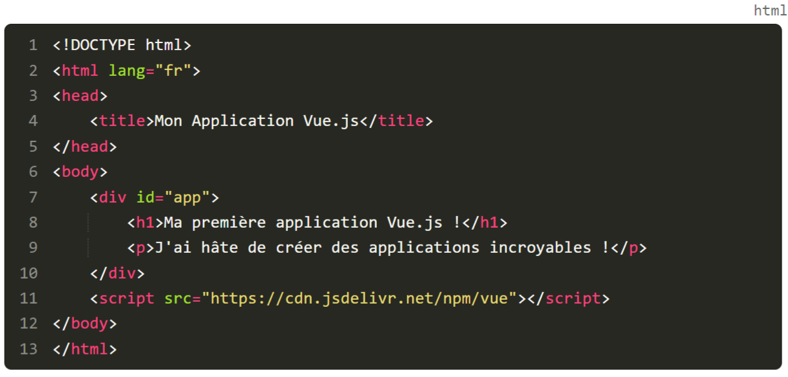
Voici comment tester si Vue a été correctement chargé ou non.
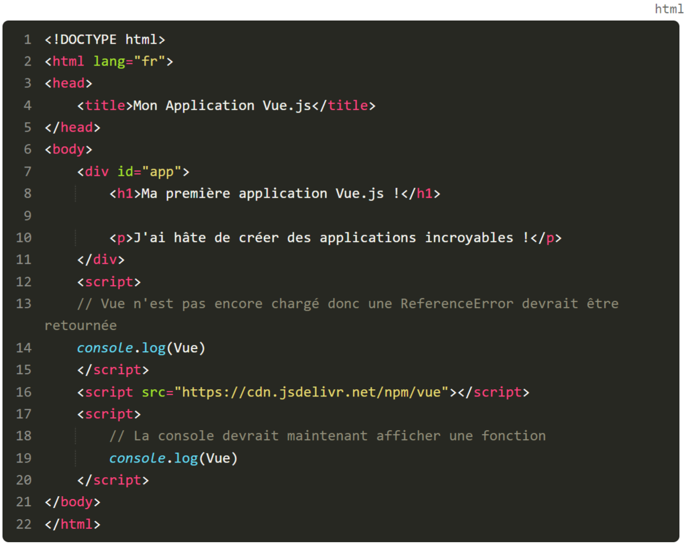
Si vous ouvrez cette page dans votre navigateur et vérifiez la console JavaScript, vous devriez voir :
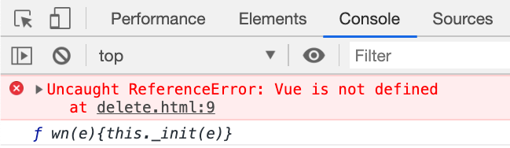
Dans la console JavaScript
Lorsque cette fonction s'affiche, cela signifie que vous avez bien réussi à charger Vue !
Définissez où Vue devrait apparaître sur votre page
Même si nous sommes parvenus à charger Vue sur notre page, cela ne signifie pas encore que notre site est devenu une application monopage.
Bien que le terme SPA (application monopage ou single-page application) puisse nous faire penser que la page entière est contrôlée par JavaScript,
la plupart des frameworks frontend permettent aux développeurs de contrôler quelle partie de la page est une SPA.
En d'autres termes, vous pouvez décider de quel élément HTML le framework est responsable.
Pour permettre à Vue d'accéder à notre page, nous devons commencer par créer une nouvelle instance de Vue.
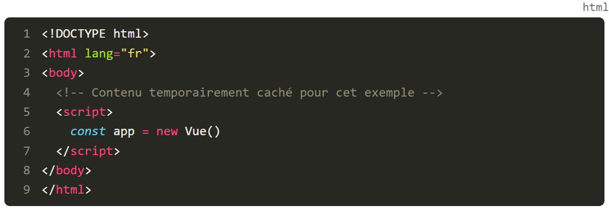
Ensuite, nous allons configurer notre instance de Vue en lui transmettant un objet contenant notre première configuration :
l'emplacement de la page sur laquelle Vue est installé.
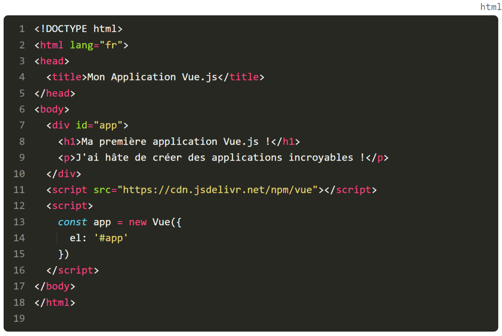
Cet objet de configuration ne possède qu'une seule propriété : « el », qui est l'abréviation d'element.
Il est ensuite suivi d'un sélecteur CSS (c'est-à-dire
#app
,
div
,
.app
).
Utiliser un sélecteur d'ID (c'est-à-dire
#app
) est considéré comme étant une bonne pratique, car votre application devra être reconnue de façon unique sur une page.
Et, bien qu'il puisse accepter n'importe quel type de sélecteur CSS parmi ceux que vous utilisez habituellement, il ne peut pas sélectionner les éléments
<.html>
ni
<.body>
.
Apprenez à stocker des données
Découvrez comment stocker les données
Comme pour toute autre application, nous avons besoin de stocker les données afin de pouvoir les réutiliser et effectuer des actions pour l'utilisateur.
Dans Vue, cela se concrétise par l'ajout d'une propriété
data
qui a comme valeur un objet.
Elle peut accepter n'importe quelle paire clé - valeur classique que vous pourriez habituellement définir en JavaScript
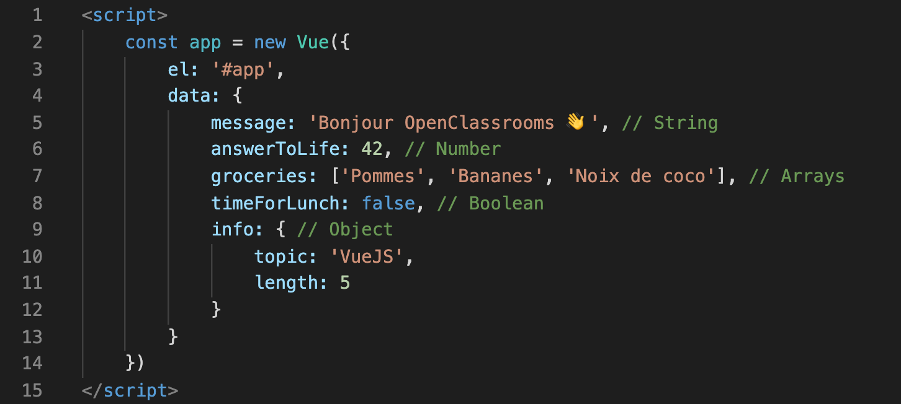
Découvrez comment afficher le rendu des données
Lorsque nous voulons afficher nos données dans notre application web, Vue utilise la syntaxe en "moustache" (entre deux accolades) pour afficher le rendu des données.
Elle est représentée par deux accolades, comme indiqué ci-dessous :
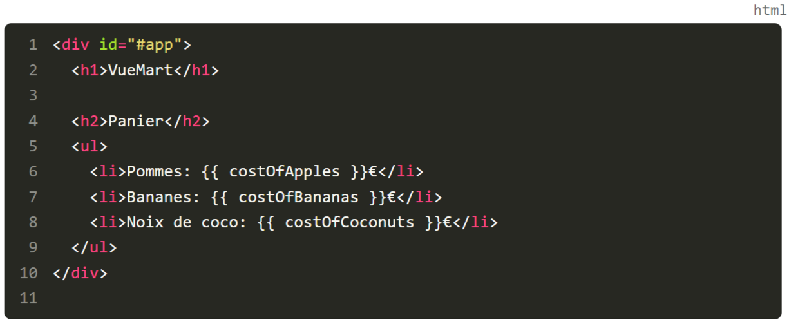
Bien que l'espace entourant la variable dans
{{ costOfApples }}
soit optionnel,
ce formatage est recommandé, car il facilite la lecture par rapport à l'alternative plus dense
{{costOfApples}}
.
Cet exemple utilise les doubles accolades pour afficher la valeur d'une variable simplement,
mais les doubles accolades peuvent aussi être utilisées pour afficher le rendu d'expressions JavaScript basiques.
En voici quelques exemples :
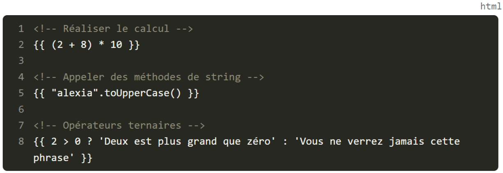
Entraînez-vous
Vous trouverez le code source des exercices dans le repo GitHub du cours, dans le dossier
cafe-avec-vue
.
Pour commencer, consultez la branche
P1C2-Begin
.
Instructions
Ajoutez Vue.js à
index.html
pour le convertir en application monopage.
Votre application doit avoir une propriété dans
data
appelée
restaurantName
.
Le nom du restaurant doit être rendu à l'aide de la syntaxe en moustache.
En résumé
installer Vue sur une page web sans l'aide d'outils de build
mettre en place une nouvelle instance de Vue
associer Vue à un élément HTML
définir un espace de stockage de données simple
afficher le rendu de données à l'aide des doubles accolades
Lors de la création d'une application, un des points les plus critiques est de s'assurer que les données sont toujours à jour et aussi faciles à maintenir que possible.
Dans une page web traditionnelle, lorsqu'on écrit du contenu en HTML simple, le contenu est considéré comme des données « codées en dur » ou « statiques ».
Ce contenu n'est pas censé être modifié en fonction d'autres variables de la page.
Bien que cette pratique soit parfaitement adaptée à des données n'apparaissant qu'une seule fois sur le site, cela a ses limites.
Cette méthode devient très difficile à gérer dans le temps, à mesure que les données sont propagées au sein d'une application.
Prenons un exemple de panier d'achats.
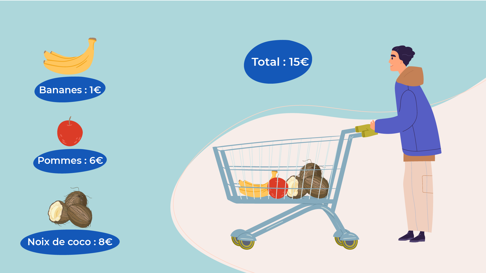
Exemple avec un panier d'achats
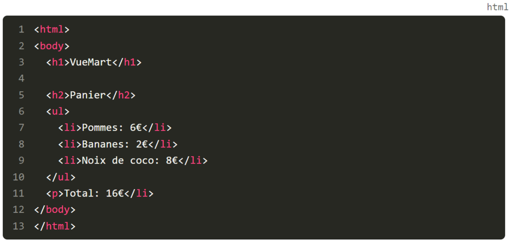
Exemple avec un panier d'achats
Dans l'exemple ci-dessus, nous pouvons voir que cette page contient une liste du contenu de la commande de l'utilisateur.
Cependant, que se passerait-il si nous faisions passer le coût des bananes de 2 € à 10 € ?
Le montant total devrait également être mis à jour avec la bonne valeur.
En d'autres termes, le total restera fixé à 16 €, à moins de le modifier manuellement en effectuant les calculs nécessaires pour le mettre à jour.
Découvrez les données réactives
Si vous avez déjà utilisé Excel et des spreadsheets, vous êtes très probablement familier avec la création d'équations dans des cellules de données.
Par exemple, dans l'illustration suivante, le montant total est généré en additionnant les montants des pommes, des bananes et des noix de coco.
Si l'un des montants change, cela se reflète automatiquement dans le total, sans aucun effort supplémentaire de votre part.
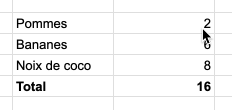
Les données se mettent à jour automatiquement dans une spreadsheet
Comme vous pouvez le constater, lorsque le montant des pommes passe à 6, le total augmente automatiquement à 20.
C'est l'essence même des données réactives puisqu'elles « réagissent » à toute modification et mettent à jour les valeurs concernées en conséquence.
Faites le lien entre les données réactives et Vue
Grâce aux connaissances que vous avez acquises dans le chapitre précédent, mettons maintenant en place un data store pour notre petit marché Vue !
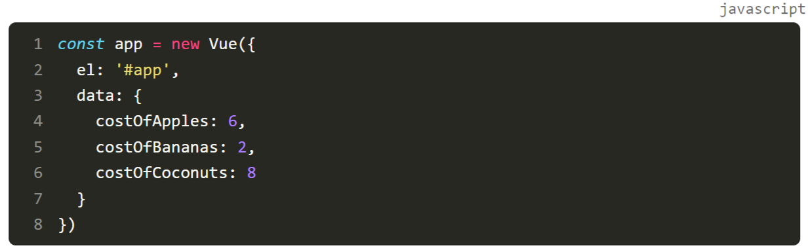
Dans notre HTML, nous pouvons maintenant réécrire le contenu statique pour qu'il ressemble à ceci :
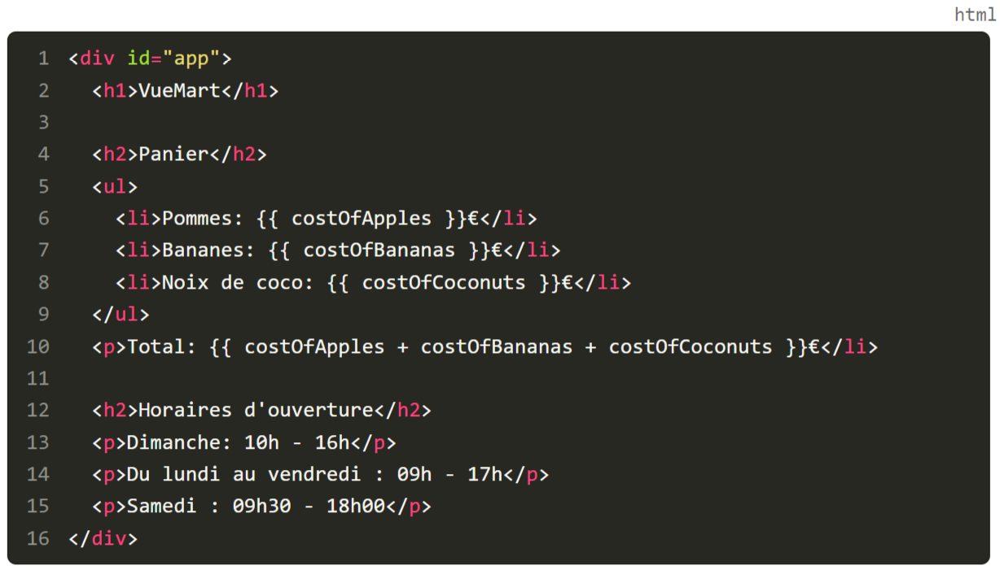
Comme vous pouvez le voir maintenant, le calcul du montant total est basé sur les trois variables :
costOfApples
,
costOfBananas
et
costOfCoconuts
.
En cas de modification de l'une de ces valeurs, le total s'adaptera en conséquence.
En d'autres termes, le data store fait en sorte que tout soit réactif pour que vous n'ayez plus à intervenir !
Bien que notre solution fonctionne, elle n'est pas satisfaisante lorsque le contenu de notre panier augmente.
En effet, cela crée un surplus de travail.
Et il serait bien plus propre de pouvoir écrire à la place
{{ totalAmount }}
.
Après tout, bien que le panier d'achats ne contienne que trois articles pour le moment, vous comprenez que cela puisse rapidement devenir incontrôlable à mesure que le panier se remplit.
Heureusement pour nous, Vue dispose d'une propriété pour nous aider à traiter ce type de cas : les propriétés calculées.
Découvrez les propriétés calculées
Les propriétés calculées (computed properties) nous permettent de définir une valeur réutilisable qui est mise à jour en fonction d'autres propriétés
data
.
Comme pour la propriété
data
, nous commençons par ajouter une propriété
computed
(calculée ) qui utilise un objet pour définir les propriétés que nous voulons.
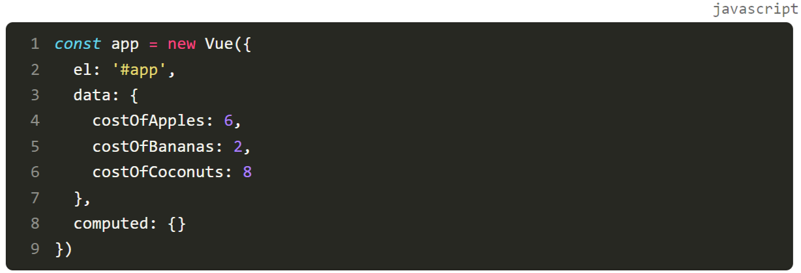
Cependant, contrairement à la propriété
data
,
chaque propriété calculée doit être une fonction retournant une valeur.
En effet, elle effectue des calculs et retourne le résultat souhaité.
Comme je l'ai mentionné précédemment, notre but est de simplifier notre code HTML en utilisant
.
Cela peut se faire de la manière suivante :
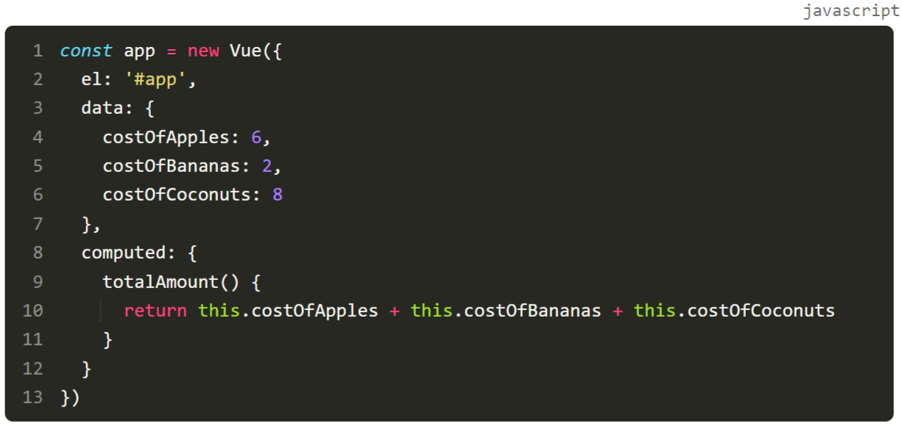
Cet exemple utilise la syntaxe ES6 pour définir une fonction (c'est-à-dire que
totalAmount() { ... }
est identique à
totalAmount: function() { ... })
.
Cependant, n'utilisez pas les fonctions fléchées, car cela réinitialisera le contexte de
this
.
Cela cassera l'application puisque vous avez besoin de
this
pour pointer vers l'instance de Vue, afin de faire référence aux propriétés de
data
.
Avec ce refactoring, notre code est complet !
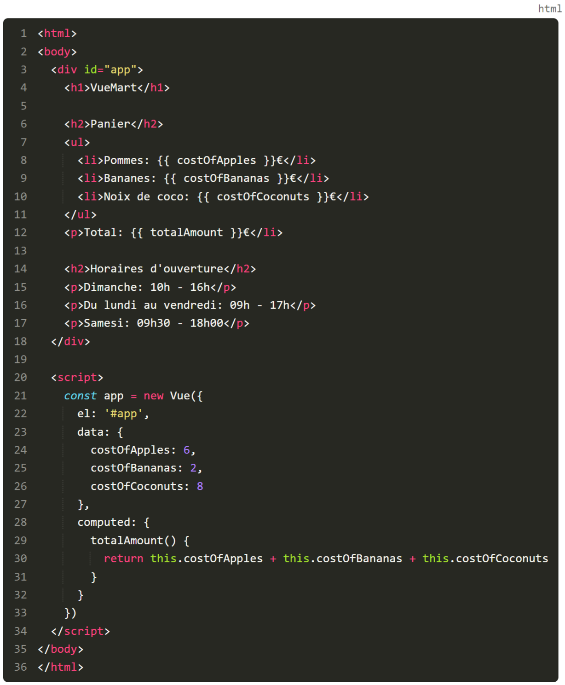
Toutes les données de notre application sont maintenant dynamiques et prêtes à réagir à toute modification pouvant intervenir dans le panier de l'utilisateur.
Pour le vérifier, vous pouvez par exemple vous rendre dans la console et taper
app.costOfApples = 4
.
Toutes les données se mettent à jour automatiquement !
Entraînez-vous !
Vous trouverez le code source des exercices dans le repo GitHub du cours, dans le dossier
cafe-avec-vue
.
Pour commencer, consultez la branche
P1C3-Begin
.
Instructions
Remplacez le nom du restaurant par "Café avec vue". Cela devrait être mis à jour partout sur le site.
Déplacez les données sur le restaurant dans le data store (le numéro de téléphone, l'adresse email et l'adresse postale).
Créez une propriété calculée pour le texte de copyright dans le footer.
En résumé
Dans ce chapitre, vous avez découvert :
les données réactives et leur importance dans la création de données maintenables dans une application ;
comment utiliser
data
pour gérer les données dans votre application Vue.js ;
comment utiliser les propriétés calculées (
computed
properties) pour simplifier votre code et la gestion de vos données.
1.3 Utilisez les directives Vue pour gérer des problèmes courants
Découvrez ce qu’est une directive
Les directives nous fournissent un moyen standard pour résoudre les problèmes courants.
Elles sont particulièrement puissantes et écrites de manière sémantique, afin que le code soit facile à comprendre.
Les directives ressemblent à des attributs HTML avec une différence principale : elles disposent toutes du préfixe
v-
.
Voici quelques directives courantes que vous rencontrerez dans les applications Vue :
v-if
,
v-else-if
,
v-else
v-show
v-for
v-bind
v-on
v-model
Dans ce chapitre, nous allons passer ces directives en revue et voir comment les utiliser pour créer des applications Vue puissantes et facilement compréhensibles par tous.
Conditionnez l'affichage du contenu
v-if
et
v-show
L'un des scénarios les plus courants dans n'importe quelle application frontend est le besoin d'afficher ou de masquer le contenu en fonction de certaines conditions.
Par exemple, selon le niveau d'autorisation d'un utilisateur, il faudra déterminer de manière dynamique le contenu à afficher ou à ne pas afficher.
Dans Vue, deux directives principales permettent de réaliser cela :
v-if
et
v-show
.
v-if
,
v-else-if
,
v-else
Comme le suggèrent les mots-clés de la directive, cette dernière suit la structure de rendu conditionnel standard
if/then
de JavaScript.
En voici un exemple simple :
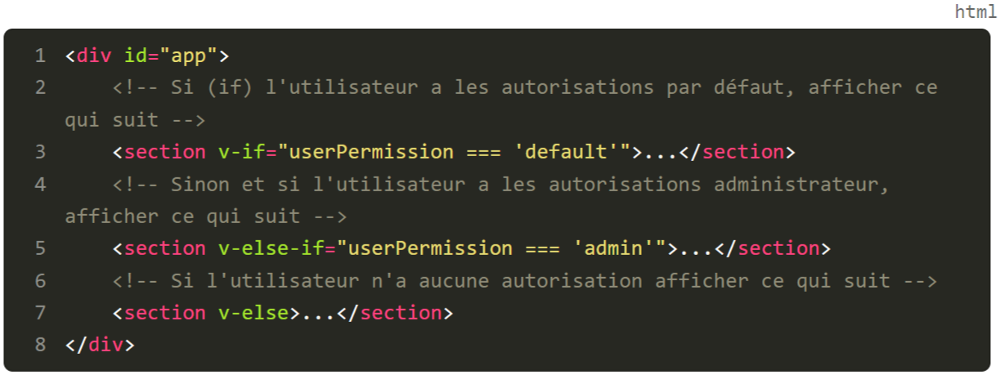
Bien qu'il ressemble à une chaîne de caractères, le texte situé entre les guillemets des directives est interprété comme du JavaScript et non comme une chaîne de caractères.
v-show
Cette directive peut sembler très similaire à la directive
v-if
; pourtant, les deux ne sont pas interchangeables.
v-show
est généralement utilisée dans le but de contrôler la visibilité d'un élément faisant l'objet d'une permutation (toggle, en anglais) fréquente.
En voici un exemple courant :
Vous n’avez pas encore vu la directive
v-on
(abrégée
@
), par exemple
@click
.
Ceci n’est pas gênant pour la compréhension du but du code et ne vous inquiétez pas, on voit ça juste après !
La principale différence entre les deux directives est que
v-show
permute la visibilité de l'élément HTML grâce au CSS,
alors que
v-if
supprime complètement l'élément du DOM.
Bouclez sur votre contenu
v-for
On peut également citer un autre scénario courant qui consiste à devoir répéter un élément HTML.
Dans le cas où nous récupérons des données d’une API par exemple, et que nous souhaitons afficher chaque item récupéré (un produit, un article, un commentaire…)
la directive
v-for
permet de réaliser cette tâche.
Elle suit la syntaxe de boucle JavaScript standard
for ... in
.
Prenons un exemple courant, le renvoi d'une liste.
Dans notre exemple de panier d'achats, on aurait également pu écrire :
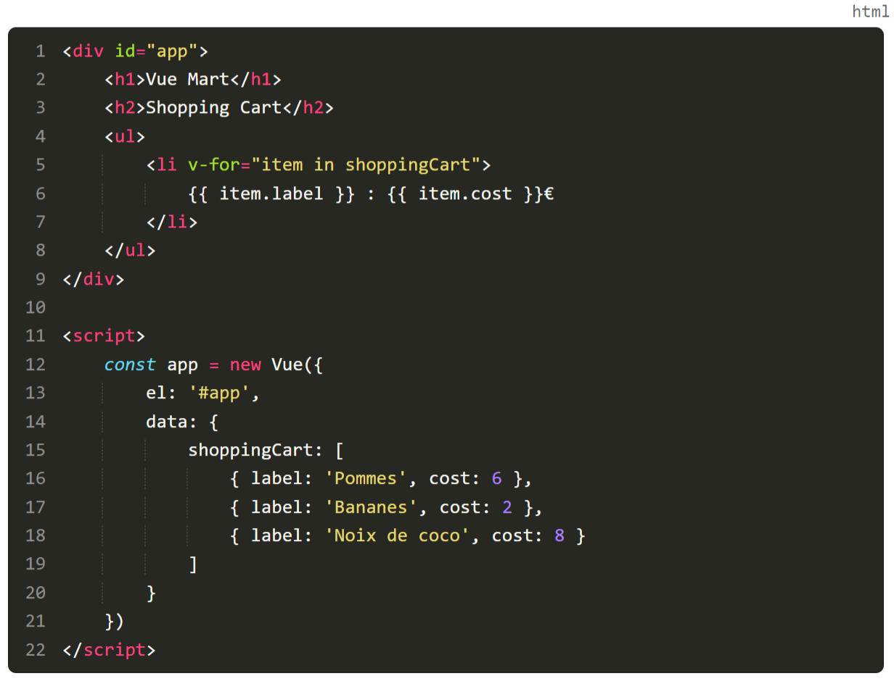
Définissez des attributs HTML de façon dynamique
v-bind
Vous serez très souvent tenté d'utiliser une propriété
data
pour définir l'attribut d'un élément, plutôt que de le coder en dur.
Il y a justement une directive faite exprès : la directive
v-bind
.
C'est le cas, par exemple, lorsque vous effectuez une requête pour récupérer des données auprès d'une API et que vous avez besoin de renvoyer des données en fonction de ce qui est retourné.
Voici un exemple :
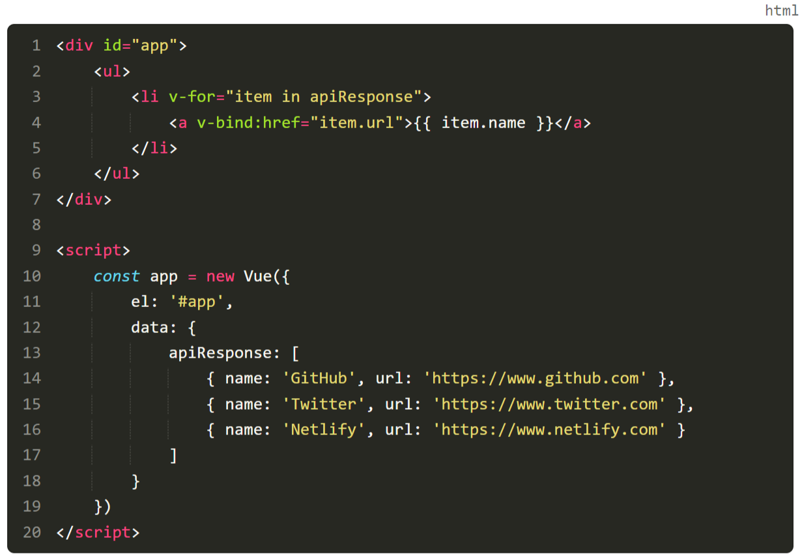
Vous auriez pu penser que nous pourrions faire
< a href=”{{ item.url }}”>...< /a>
.
Cependant, si vous faites ça, vous aurez dans le dur en HTML
< a href=”{{ item.url }}”>...< /a>
et non pas
< a href=”https://github.com”>...< /a>
par exemple.
La directive
v-bind
est couramment utilisée via son abréviation
:
.
En d'autres termes, au lieu d'écrire
v-bind:href="item.url"
, on écrit généralement plutôt
:href="item.url"
.
Écoutez des événements et répondez-y
v-on
Lorsque vous souhaitez écouter certains événements sur un élément, Vue vous facilite la tâche avec la directive
v-on
.
Voici un exemple simple :
La directive
v-on
est couramment utilisée via son abréviation
@
.
Au lieu d'écrire
v-on:click="alert('Bonjour')"
, on écrit généralement plutôt
@click="alert('Bonjour')"
.
Cependant, nous aurons souvent besoin d'appeler des fonctions bien plus complexes qu'une seule ligne de JavaScript.
Et c'est là que les méthodes entrent en jeu.
Les méthodes vous permettent de définir des fonctions auxquelles votre application Vue aura accès.
Elles sont définies comme la propriété
data
.
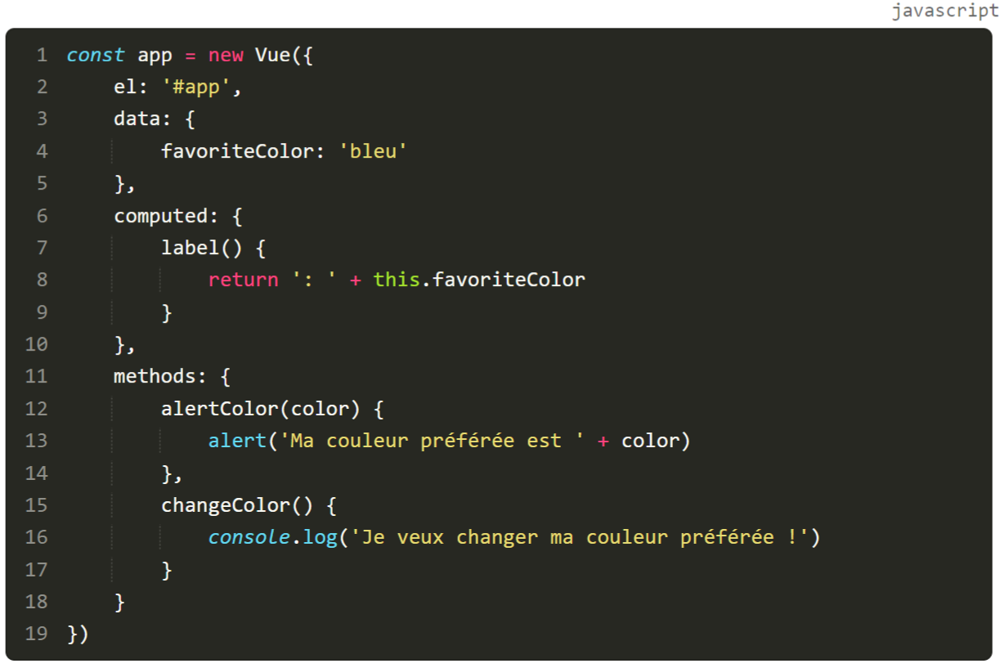
Comme vous pouvez le constater, il faut un objet qui est en fait une fonction JavaScript standard.
Cependant, vous voudrez parfois interagir avec des propriétés gérées dans Vue (c'est-à-dire, data, calculées, etc.).
Tout comme vous désigneriez des propriétés
data
dans des valeurs calculées en les préfixant avec
this
, vous ferez la même chose ici !
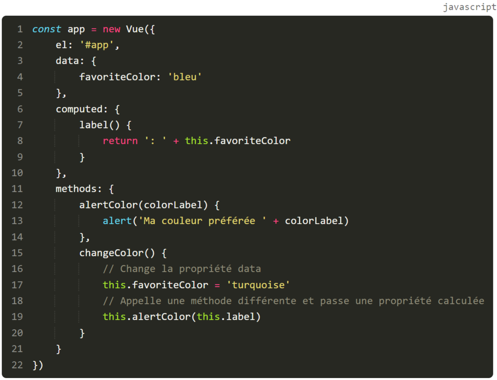
Mettez à jour les données dans des formulaires
v-model
Lorsque l'on travaille avec des formulaires, on préfère mettre à jour le data store en conséquence.
Cela nous permet d'effectuer des tâches telles que lancer une validation, des calculs, etc.
Même s'il est possible de réaliser cela manuellement avec une directive
v-on
avec
v-bind
,
Vue fournit un moyen standard pour accomplir cette tâche avec
v-model
.
Cela vous permet de définir la propriété
data
que vous souhaitez mettre à jour lorsque l'utilisateur interagit avec un formulaire.
Voici un exemple :
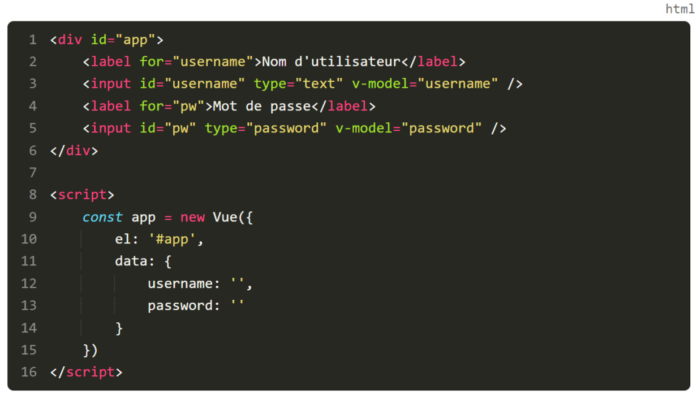
Maintenant, à chaque fois que l'utilisateur saisira des données dans les inputs correspondants, le data store sera mis à jour en conséquence !
Entraînez-vous
Vous trouverez le code source des exercices dans le repo GitHub du cours, dans le dossier
cafe-avec-vue
.
Pour commencer, consultez la branche
P1C4-Begin
.
Instructions
Utilisez la directive
v-for
pour afficher tous les éléments de simpleMenu
Utilisez la directive
v-if
pour indiquer si un article est "En stock" ou "En rupture de stock".
Utilisez la directive
v-bind
pour rendre dynamiquement chaque image du menu et remplir son texte
alt
.
Utilisez la directive
v-on
pour augmenter le total du panier lors de l'ajout d'un article du menu avec une fonction définie dans les méthodes appelées
addToShoppingCart
.
Utiliser
v-model
pour permettre à l'utilisateur de mettre à jour le nombre d'articles qu'il souhaite mettre lorsqu'il fait un ajout au panier.
En résumé
Vous avez acquis les compétences nécessaires pour utiliser les directives dans le but de :
afficher et masquer du contenu ;
réaliser une boucle à travers une liste de données et afficher le rendu de son contenu ;
mettre à jour des attributs HTML de façon dynamique ;
écouter des événements auxquels vous pouvez répondre ;
créer des fonctions JavaScript que Vue.js peut utiliser ;
configurer des formulaires pour que votre data store soit mis à jour au fur et à mesure que l'utilisateur interagit avec lui.
Pour commencer à utiliser la CLI de Vue, la version de Node 8.9 ou supérieure est nécessaire (v8.11.0 ou + est recommandée).
L'installation sur votre machine se fait en mettant cette ligne dans votre terminal (ou Windows PowerShell si vous êtes sur Windows) :
npm install -g @vue/cli
# OU (selon si vous avez l’habitude d’utiliser npm ou yarn)
yarn global add @vue/cli
Une fois l'installation terminée, vous devriez être en mesure d'exécuter :
vue --version
# 4.x
Lorsque votre terminal affiche une version 3.x ou 4.x, cela signifie que Vue CLI a été installé avec succès !
Créez un nouveau projet
Créer un nouveau projet avec Vue CLI est une opération simple.
Lançons-nous et créons un projet ensemble :
vue create my-first-vue-cli-app
Vous devriez être invité à choisir un preset ( vous pouvez le traduire par "préréglage") :
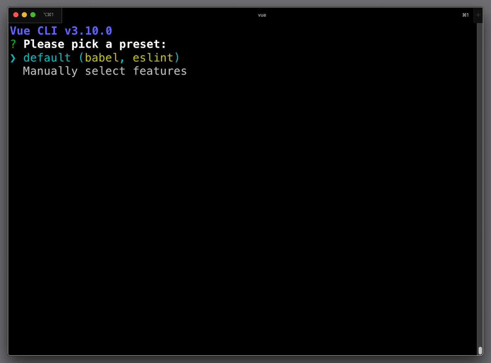
Exemple de preset que vous verrez en utilisant la commande Vue create
Un preset correspond aux options préconfigurées installées automatiquement avec chaque application.
Comme votre installation de Vue CLI est nouvelle, vous verrez qu'elle ne dispose que d'un preset par défaut (Babel, ESLint),
ainsi que d'une option permettant de sélectionner les fonctionnalités manuellement.
Pour parcourir l'ensemble des configurations de Vue CLI,
utilisez la touche "flèche vers le bas" pour déplacer la sélection,
et appuyez sur
Entrée
pour choisir notre sélection.
Pour naviguer dans l'outil Vue CLI, vous devez utiliser :
les touches fléchées pour la direction ;
la touche Retour/Entrée pour choisir votre option ;
la barre d'espace pour sélectionner une option parmi les inputs de type "checkbox".
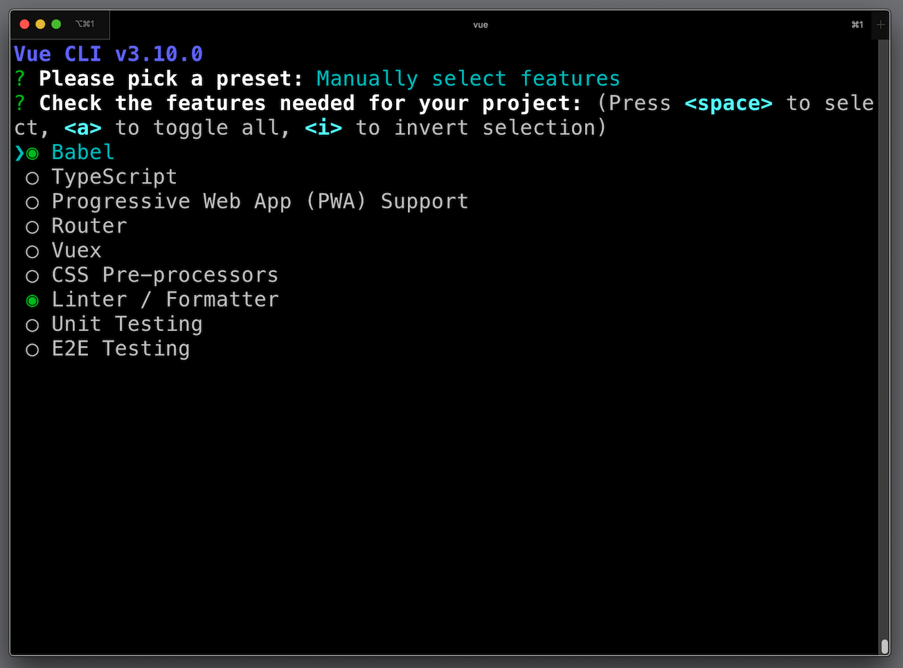
Liste des choix possibles quand vous choisissez de configurer votre app manuellement
Une fois que vous avez choisi « Manually select features » (sélectionner les fonctionnalités manuellement),
l'écran d'accueil suivant devrait apparaître :
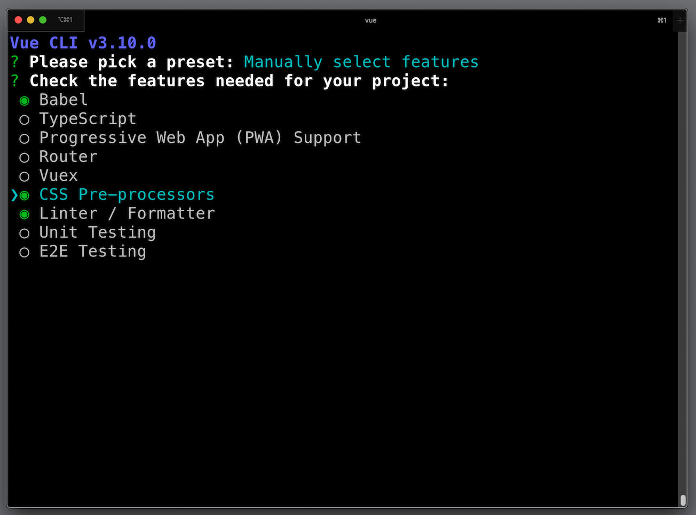
Lorsque vous choisissez CSS preprocessors, le cercle devient vert pour vous indiquer qu'il est sélectionné
Par ailleurs, vous avez peut-être également remarqué que vous pouvez mettre en place vos outils de tests d'intégration à cet endroit.
Même si nous n'aborderons pas les tests à proprement parler dans ce cours,
je recommanderais les bibliothèques Jest pour les tests unitaires et Cypress pour les tests end-to-end (e2e).
Les options présentées ici dépassent certes le cadre de ce cours,
mais vous pouvez voir qu'il existe de nombreuses options pour configurer vos projets.
Passons maintenant au préprocesseur CSS.
Il vous sera utile si vous souhaitez activer le « mode historique » pour le routeur. Tapez
n
et appuyez sur la touche
Retour
.
Pour notre préprocesseur CSS, nous choisirons
Sass/SCSS (with node-sass)
Pour notre linter, nous choisirons
ESLint with error prevention only
Pour la configuration de lint, choisissez
Lint on save
Pour l'emplacement souhaité de la configuration, choisissez
In dedicated config files
Vous disposez également d'une option permettant de sauvegarder cette configuration pour de futures applications,
mais comme il s'agit d'une configuration temporaire,
nous allons saisir
n
pour que notre configuration ne soit pas sauvegardée comme preset.
Vous n’avez pas tout ça qui s’affiche ?
Pas de soucis, en utilisant le GUI, peut-être que ce sera plus simple pour vous (voir juste après Vue UI).
Votre terminal va maintenant commencer à installer tous les paquets nécessaires pour la CLI.
Les réglages de terminal diffèrent légèrement d'un utilisateur à l'autre, mais une fois que vous voyez quelque chose comme :
🎉 Successfully created project my-first-vue-cli-app.
👉 Get started with the following commands:
$ cd my-first-vue-cli-app
$ npm run serve
Vue CLI dispose également d'une interface utilisateur très performante et agréable à utiliser lancée en local.
Cette interface dispose d'une version en français pour celles et ceux qui préfèrent.
Vous pouvez la lancer avec la commande
vue ui
.
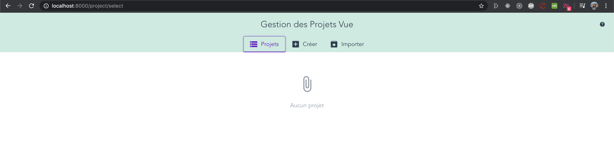
Pour en savoir plus, consultez la documentation.
Découvrez l’architecture d’une application Vue CLI
Lorsque vous ouvrez votre nouveau projet,
my-first-vue-cli-app
,
dans votre éditeur de code, vous devriez voir quelque chose semblable à ce qui suit.
Le principal contenu à connaître est le suivant :
node_modules :
contient l'ensemble des dépendances qui permettent à votre application de faire tout ce qu'elle fait.
Vous n'aurez que rarement (sinon jamais) besoin d'aller dans ce dossier, car il n'est généralement pas attaché au repository, mais directement géré par npm ;
public :
ce répertoire contient le
favicon.ico
et le fichier
index.html
de base qui serviront à générer le reste de votre application ;
src :
ce répertoire est celui dans lequel vous passerez 99 % de votre temps, car la quasi-totalité de votre code y sera située ;
.gitignore :
ce fichier contient une liste de fichiers et/ou de répertoires qui ne seront pas attachés à un repository.
Citons ici deux exemples courants avec le répertoire
/dist
, qui est généré de manière automatique à chaque build (et ne nécessite donc aucun suivi),
et le répertoire
node_modules
, qui est automatiquement recréé à chaque lancement de la commande
npm install
ou
yarn install
;
package.json :
il s'agit du fichier de configuration de base de votre projet.
Il comprend des métadonnées comme le nom et la version de votre projet,
mais il contient également des informations essentielles comme les scripts pouvant être exécutés (comme serve, build, lint) et les dépendances requises pour votre projet :
serve :
il s'agit du script qui permet de lancer une environnement de développement en local,
build :
ce script permet de créer la version finale qui sera livrée à un client ou à l'utilisateur.
Continuons et ouvrons ensuite le répertoire src :
Assets :
il s'agit du répertoire dans lequel vous placerez les images et les autres ressources obligatoires auxquelles vous devrez peut-être faire référence dans votre application (c'est-à-dire les vidéos, les documents PDF, etc.).
Components :
ce répertoire contiendra les composants de notre application.
Si vous ne savez pas encore ce que sont les composants, ne vous inquiétez pas.
Je traiterai ce sujet dans le prochain chapitre !
main.js :
c'est ici que sont définies les options de configuration plus high-level de Vue.
Ce fichier peut sembler légèrement différent de ce à quoi nous sommes habitués,
mais l'instanciation d'une nouvelle application Vue devrait ressembler à ce que nous avons fait précédemment.
En regardant cette liste, vous avez peut-être remarqué que j'ai omis un fichier important :
App.vue
.
Nous sommes en effet sur le point de nous plonger dans l'un des aspects les plus intéressants de Vue : les composants monofichiers.
Avant de passer au chapitre suivant, retournons dans le terminal et testons :
npm run serve
Cette commande lance un environnement de développement local (généralement à l'adresse
http://localhost:8080
) qui vous permet de voir et d'interagir avec les changements dans votre application au fur et à mesure que vous codez.
C'est l'un des meilleurs outils créés pour les développeurs web, et la plupart ne peuvent pas imaginer la vie sans lui !
Une fois que vous êtes dans votre environnement de développement local,
je vous recommande vivement de consulter Vue DevTools, qui est une véritable boîte à outils pour les développeurs utilisant Vue.
Elle nous aide à créer des super applications Vue
Une fois que cette commande est lancée, le serveur sera toujours accessible.
Dès que vous voulez couper cette connexion, exécutez la combinaison de touches suivantes dans votre console :
Ctrl + C
.
Entraînez-vous
Vous trouverez le code source des exercices dans le repo GitHub du cours, dans le dossier
cafe-avec-vue
.
Pour commencer, consultez la branche
P2C1-Begin
.
Instructions
Créer un nouveau projet avec Vue CLI qui est appelé cli-version avec la configuration suivante :
Préprocesseur CSS (Sass/SCSS) avec node-sass.
ESLint avec prévention des erreurs uniquement.
Lint on Save.
Dans des fichiers de configuration dédiés.
Ne pas enregistrer comme un preset.
En résumé
Dans ce chapitre, vous avez appris :
comment installer Vue CLI ;
comment créer une nouvelle application Vue avec Vue CLI ;
comment configurer une application Vue avec Vue CLI ;
comment sont structurées les applications générées par Vue CLI.
2.2 Facilitez la maintenance grâce aux composants monofichiers
Appréhendez le problème de la complexité
Lors de la création d'un site web, nous sommes très souvent amenés à répéter notre code et cela rend souvent la maintenance un peu difficile.
Par exemple, la plupart des sites web ont un menu de navigation sur chaque page.
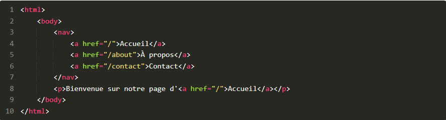
Bien que cela soit assez simple à gérer sur une seule page, imaginez ce qui se passerait si quelqu'un devait modifier les liens de navigation.
Si vous deviez mettre à jour la classe CSS pour actualiser les styles, cela nécessiterait au moins trois lignes de modifications de code pour chaque page qui utilise cette navigation.
Par conséquent, cela crée de nombreuses possibilités de bugs.
Bien que cela soit assez simple à gérer sur une seule page, imaginez ce qui se passerait si quelqu'un devait modifier les liens de navigation.
Si vous deviez mettre à jour la classe CSS pour actualiser les styles,
cela nécessiterait au moins trois lignes de modifications de code pour chaque page qui utilise cette navigation.
Par conséquent, cela crée de nombreuses possibilités de bugs.
Découvrez la solution : les composants
Pour résoudre ce problème, le concept de composants a été popularisé.
Ils permettent d'encapsuler un ensemble d'éléments HTML, de façon réutilisable et facilement maintenable.
L'architecture basée sur les composants est l'un des éléments les plus importants du développement frontend,
car c'est elle qui fournit les bases pour des applications scalables (c'est-à-dire qui peuvent être déployées à une grande échelle) et maintenables.
Prenons un exemple pour voir comment les composants fonctionnent.
Les composants monofichiers vous permettent de créer des éléments HTML personnalisés qui encapsulent leur comportement d'une manière facilement maintenable.
Ils constituent l'une des meilleures caractéristiques de Vue et peuvent être identifiés par leur extension
.vue
.
Ils sont composés de trois blocs primaires :
Script: où vit votre JavaScript ;
Template: où vit votre HTML ;
Style: où vit votre CSS.
Commençons par créer un exemple simple dans notre répertoire de composants :
Les composants monofichiers vous permettent d'encapsuler votre logique, votre contenu et vos styles de façon à faciliter leur maintenance et leur évolution.
Vous tirerez également parti des meilleures pratiques, puisque le processus de construction séparera votre code en packages corrects au moment du build.
Utilisez les composants monofichiers
Nous allons remanier notre exemple de navigation en utilisant notre nouveau composant dans Vue.
Allez dans
App.vue
et tapez :
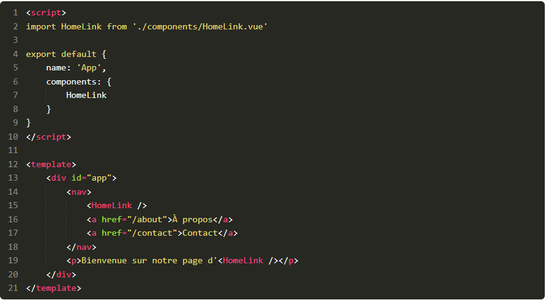
Revoyons ce qui vient de se passer :
J'ai importé le composant
HomeLink
en utilisant l'importation ES6.
J'ai enregistré le composant via la propriété
components
, qui prend un objet comme valeur avec des paires clé-valeur pour enregistrer les composants
(dans l'exemple, j'utilise la notation abrégée ES6 pour définir les paires clé-valeur des objets.
En ne définissant la valeur que comme une seule variable, JavaScript comprend qu'il faut la décomposer en :
"HomeLink" : Homelink
).
Enfin, j'ai remplacé toutes les références de
< a href="/">Home< /a>
par notre nouveau composant
< HomeLink />
.
Cette action est très puissante, car toutes les modifications que vous souhaitez apporter au lien d'accueil peuvent maintenant être faites à partir d'un seul endroit.
Et une fois que vous aurez fait ce changement, il sera appliqué automatiquement au reste de la page.
Gérez la communication entre vos composants : les props
Bien que l'exemple ci-dessus soit utile car il peut être réutilisé, il est plutôt limité puisqu'il comporte une URL et un texte codés en dur.
Imaginez si vous pouviez configurer les composants.
Eh bien, c'est possible grâce aux
props
:
props
est un attribut que vous pouvez définir au niveau du composant qui sera transmis directement au template.
Prenons l'exemple de notre composant
HomeLink
et transformons-le en un composant plus générique :
NavLink
.
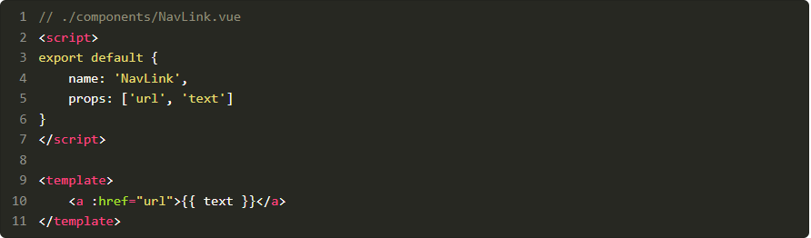
Nous définissons deux
props
pour notre nouveau composant :
url
: qui alimentera notre attribut href ;
text
: qui remplira le texte qui vit dans la balise anchor.
Il sera utilisé comme ceci :
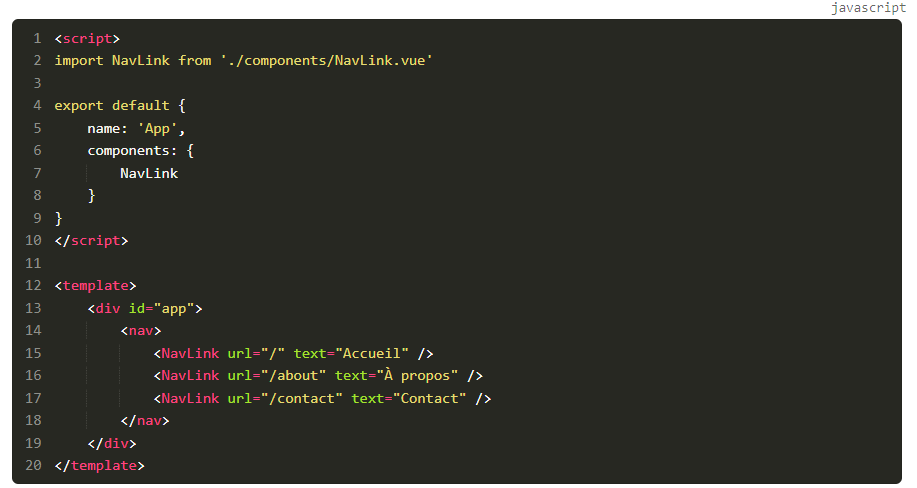
Avec ce refactoring, notre application est plus facile à maintenir puisqu'il n'y a qu'un seul fichier qui contient toutes les configurations dont nous avons besoin.
Elles seront ensuite appliquées dans toute notre application.
En d'autres termes, une fois que nous aurons apporté une modification à ce fichier, elle sera appliquée de manière uniforme dans le reste de l'application.
Exercez-vous
Vous trouverez le code source des exercices dans le repo GitHub du cours, dans le dossier
cafe-avec-vue
.
Pour commencer, consultez la branche
P2C2-Begin
.
Instructions
Créer un nouveau projet avec Vue CLI qui est appelé cli-version avec la configuration suivante :
Migrez le contenu de
index.html
vers
cli-version/src/App.vue
Migrez le répertoire des
images
vers
cli-version/public
Mettez à jour le chemin (path) des images dans
simpleMenu
pour qu'il soit relatif et non plus absolu (en supprimant le
.
qui préfixe l'URL).
Créez un composant pour MenuItem.vue et migrez les éléments (items) du menu.
Utilisez des props pour vous assurer que les données de
MenuItem
sont toujours correctement rendues et qu'elles peuvent toujours mettre à jour le total du panier (astuce : vous pouvez transmettre des fonctions dans les props).
En résumé
Dans ce chapitre, vous avez appris à :
identifier des composants sur une page web ;
créer des composants avec des composants monofichiers ;
utiliser des composants dans d'autres composants ;
transférer des données dans des composants avec les props.
2.3 Gérez la navigation de votre application avec le routeur Vue
Créez le routage de votre application monopage
Comme nous l'avons vu précédemment, le terme « Applications monopages » (SPA) indique qu'une seule page est chargée.
Cette dernière est ensuite mise à jour dynamiquement en fonction des besoins.
Bien que cela soit puissant, il y a tout de même un défaut principal : les utilisateurs ont besoin d'URL différentes pour distinguer les différentes pages les unes des autres.
Sinon, à chaque fois qu'un utilisateur essaie de revenir en arrière, il obtiendra toujours la même page !
Pour résoudre ce problème, tous les grands frameworks disposent d'une solution de routage.
La solution recommandée par Vue est la bibliothèque officielle vue-router.
Installez Vue Router
Pour ajouter Vue Router à notre application, nous utiliserons Vue CLI :
vue add router
Une fois l'installation terminée, vous devriez observer que la CLI a modifié un certain nombre de fichiers afin de s'assurer que tout fonctionne correctement.
Si vous ouvrez votre fichier
main.js
, vous verrez que Vue CLI a automatiquement configuré la propriété Router en la rattachant à votre instance de Vue.
De plus, un nouveau fichier est apparu, essentiel à la compréhension du routage :
router/index.js
.
Découvrez l’anatomie du routeur
Lorsque vous ouvrez le fichier
router/index.js
dans votre éditeur de code, vous devriez voir quelque chose de similaire à ceci :
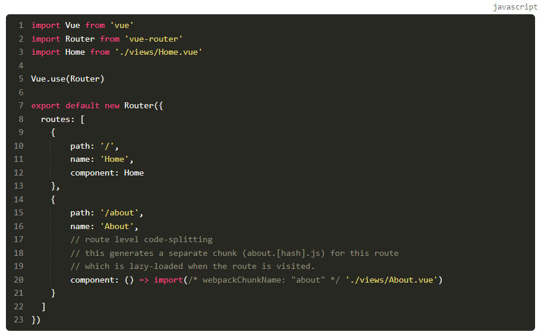
Ici, les routes de notre application Vue sont définies via un tableau contenant des objets qui définissent chaque route.
Chaque objet route contient trois propriétés clés :
path (chemin) : l'URL correspondant au composant ;
name (nom) : le nom de cette route pour l'étiquetage et le débuggage ;
component (composant) : le composant qui doit s'afficher lorsque le path est trouvé.
Comprenez le fonctionnement de Vue Router
Il existe deux composants principaux que Vue Router utilise et que vous devrez apprivoiser pour vos applications :
< router-view>< /router-view>
:
il définit la zone de la page dans laquelle apparaîtra le composant que nous définissons dans chaque route.
Il est particulièrement important si vous imbriquez des vues les unes dans les autres ;
< router-link>< /router-link>
:
similaire à la balise
a
(anchor) en HTML, ce composant permet également la navigation de l'utilisateur dans l'application.
Cependant, il est privilégié par rapport à l'utilisation d'une balise d'ancrage standard, car il dispose de fonctionnalités intégrées, comme le fait qu'il évite de recharger systématiquement la page.
Ces deux composants constituent la base de l'utilisation de Vue Router dans nos composants.
Ils facilitent la navigation dans une application Vue.
Créez des routes dynamiques
Vous devrez parfois faire correspondre un modèle d'URL à une page spécifique.
Par exemple, revenons à notre application de marché.
Vous souhaitez avoir une page individuelle pour chaque élément du menu, mais vous souhaitez utiliser une même page
ItemDetail.vue
pour voir le détail de l'élément.
Pour cela, vous avez besoin que la route passe l'information de manière dynamique.
Vue Router règle ce problème en permettant le matching de route dynamique.
Dans l'exemple que nous venons d'expliquer, vous pourriez configurer votre route de la façon suivante :
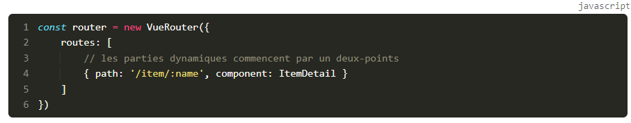
La variable dynamique qui pourra être modifiée dans l'URL est marquée par deux-points.
Cela permet ensuite au composant
ItemDetail
d'extraire les paramètres à utiliser :
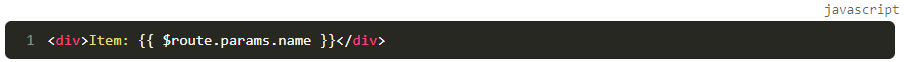
Par conséquent, lorsque nous nous rendons à l'URL :
http://localhost:8080/item/croissant
, notre page affiche :
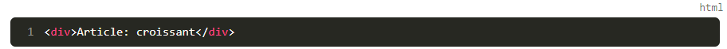
Entrainez-vous
Vous trouverez le code source des exercices dans le repo GitHub du cours, dans le dossier
cafe-avec-vue
.
Pour commencer, consultez la branche
P2C3-Begin
.
Instructions
Sauvegardez temporairement le contenu de
App.vue
dans un fichier séparé car il sera écrasé par l'installation.
Ajoutez le plugin
vue-router
à l'application et n'activez pas le mode historique lors de l'installation (
Use history mode for router? => N
).
Migrez les données temporairement sauvegardées de l'ancienne
App.vue
vers
Home.vue
Créez une route statique pour la page de contact à l'url
/contact
Migrez les coordonnées de
Home.vue
vers
Contact.vue
Ajoutez le lien du routeur de contact à
App.vue
Activez le mode historique dans la configuration de votre routeur.
En résumé
Le routage peut être un peu difficile à mettre en place, mais vous savez maintenant :
installer Vue Router sur votre application Vue CLI sans le mode history ;
configurer des routes ;
utiliser
router-view
et
router-link
pour gérer le routage ;
utiliser le matching dynamique de route pour vos pages personnalisées.
L'un des indicateurs les plus couramment utilisés pour mesurer la performance d'un site est le temps nécessaire avant que l'utilisateur puisse interagir avec le site.
Par conséquent, il vaut mieux éviter que notre code entier ne commence à s'exécuter que lorsque le chargement de la page se termine.
Cela ajouterait du temps d'attente et dégraderait la performance de notre site.
Et si je vous disais que le code peut s'exécuter à part, avant que vos composants ne soient affichés à l'écran ?
Les frameworks JavaScript ont bien intégré ce besoin, et permettent d'exécuter notre code à différents moments.
Pour résoudre ce problème, la plupart des frameworks utilisent le concept de cycle de vie des composants (components lifecycle),
qui définit une série d'étapes par lesquelles un composant passe, de sa création à sa disparition.
Bien sûr, Vue ne déroge pas à la règle.
Il existe 3 étapes majeures dans le cycle de vie d'un composant :
Create: qui représente la durée pendant laquelle le composant est en construction.
Mount: qui représente le moment durant lequel le composant va être rendu sur notre page.
Destroy: qui représente le moment où le composant va être retiré de la page.
Il est très utile de connaître ces étapes, car vous aurez besoin de définir une stratégie concernant le moment où une action particulière doit s'exécuter.
En effet, en planifiant au mieux le moment où chaque action se produit, vous vous assurez de la meilleure expérience utilisateur possible pour votre application.
Découvrez les hooks de cycle de vie
Pour résoudre ce problème de timing, les frameworks comme Vue proposent des hooks de cycle de vie (life cycle hooks).
Ils permettent d'accéder à des événements spécifiques autour de ces étapes.
Nous pouvons ainsi réaliser des actions comme déclencher du code qui fait appel à des API, avant même l'apparition du composant sur la page.
Les principaux hooks que nous verrons ici sont les suivants :
beforeCreate
created
beforeMount
mounted
beforeDestroy
destroyed
Comme vous pouvez le voir dans la liste, chaque étape dont je vous ai parlé plus tôt est accompagnée d'une paire de hooks de cycle de vie,
ce qui va vous permettre d'exécuter le code avant et après l'apparition de l'étape.
Cela a son importance, car certaines actions ne sont tout simplement pas réalisables pendant certains hooks du cycle de vie.
Par exemple, modifier des attributs sur un élément HTML pendant
beforeCreate
serait impossible puisque l'élément n'existe même pas encore.
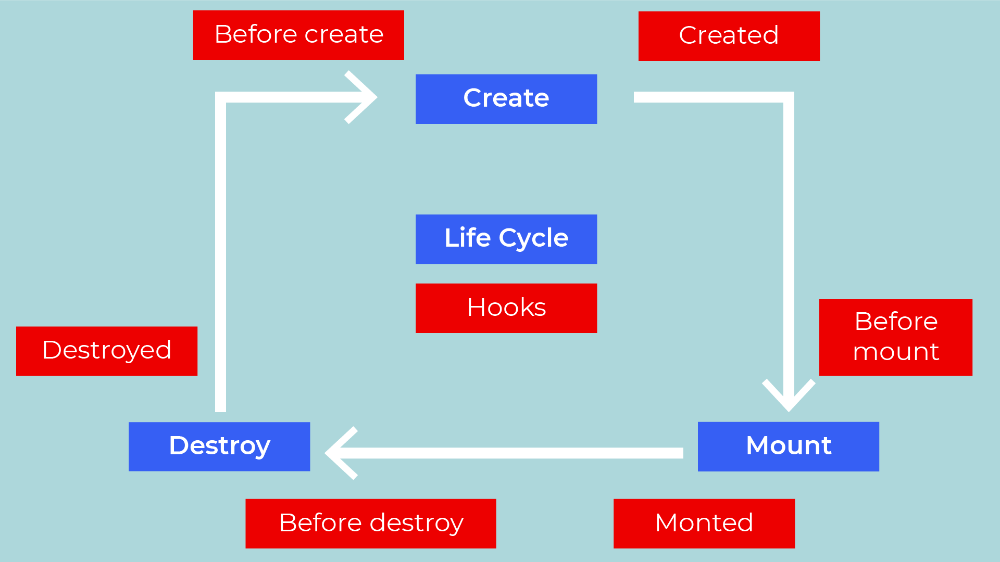
Schéma du cycle de vie (life cycle) d'un composant
Schéma du cycle de vie d'un composant
Pour une meilleure compréhension du cycle de vie d'un composant dans Vue, vous pouvez consulter le diagramme de cycle de vie dans la documentation.
Utilisez des hooks de cycle de vie
L'utilisation des hooks de cycle de vie est particulièrement facilitée par Vue.
De la même façon que vous définiriez
data
ou
computed
, il s'agit simplement d'ajouter une autre propriété à votre objet de configuration de Vue.
La seule différence réside dans le fait qu'il s'agit de fonctions plutôt que de simples chaînes de caractères :
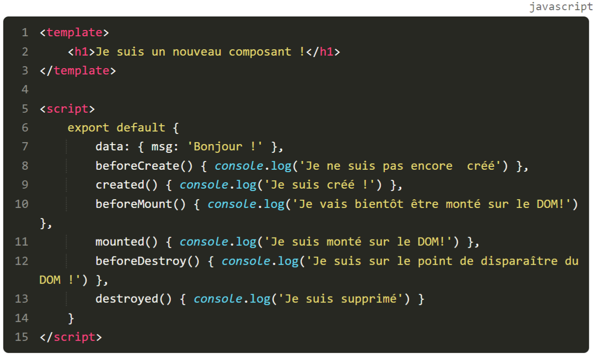
À l'intérieur de vos hooks de cycle de vie, vous pouvez écrire n'importe quel code JavaScript dont vous avez l'habitude
et faire référence à n'importe quelle propriété standard de Vue (par exemple, data, computed, etc.) avec le préfixe
this
, comme partout ailleurs.
Entrainez-vous
Vous trouverez le code source des exercices dans le repo GitHub du cours, dans le dossier
cafe-avec-vue
.
Pour commencer, consultez la branche
P2C4-Begin
.
Instructions
Utilisez un hook de cycle de vie avant que
MenuItem
ne soit rendu
pour vérifier si la date de la journée est paire.
Si c'est le cas, le prix de chaque article devrait être affiché avec une réduction de 10 %.
En résumé
Fort de vos nouvelles connaissances sur les hooks de cycle de vie, vous pouvez maintenant :
définir une stratégie pour fixer le meilleur moment auquel un code donné va s'exécuter ;
implémenter des hooks de cycle de vie dans votre application en cas de besoin.
Actuellement, lorsqu'il s'agit d'écrire du CSS, la plupart des codebases frontend utilisent un préprocesseur (comme Sass, LESS, etc.).
Et pour utiliser des préprocesseurs, les styles sont généralement écrits dans un format de fichier spécifique :
Sass ⇒ *.sass ou *.scss
LESS ⇒ *.less
Pour tirer parti de la puissance des préprocesseurs, tout en les maintenant couplés à votre composant, vous pouvez utiliser la prop
lang
.
Après avoir configuré votre application Vue CLI avec le bon préprocesseur (comme nous l'avions fait dans la partie précédente),
il suffit de passer la prop
lang
au bloc de style.
Assurez-vous de bien mettre le préprocesseur souhaité, ici scss.
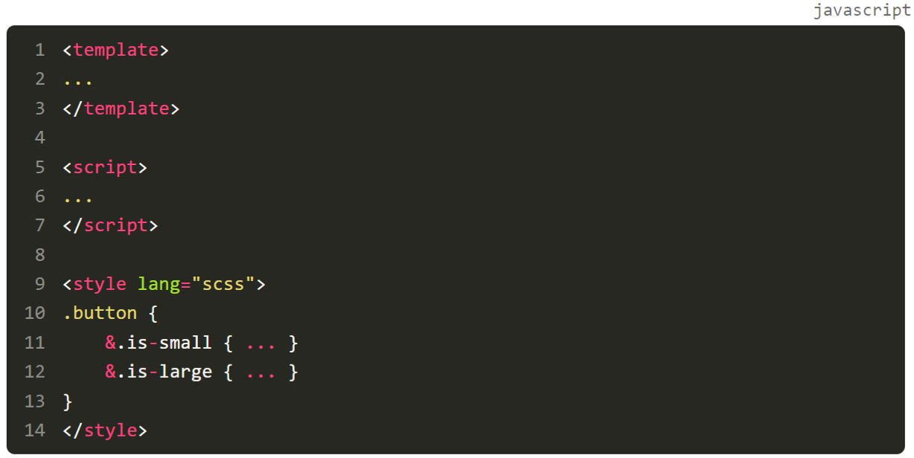
Gérez le CSS
Pour comprendre comment gérer votre CSS, il faut comprendre de quelle façon
style
est compilé en production.
Gérez le style global par défaut
Lorsque
style
ne comporte aucune configuration additionnelle,
les styles sont appliqués de manière générale,
à chaque fois que le composant est rendu.
Donc, si notre composant ressemble à ce qui suit :
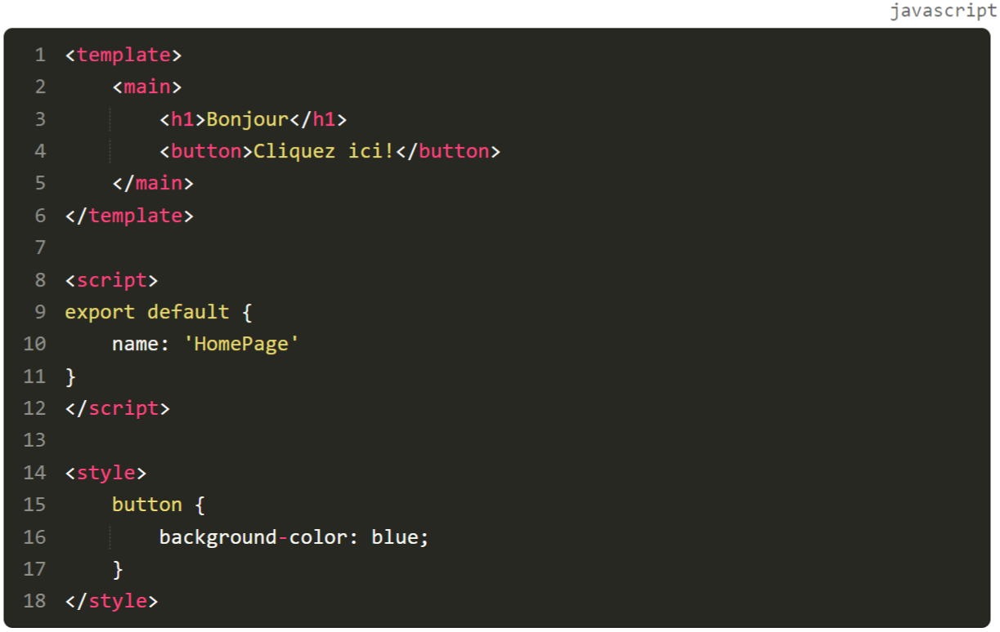
...l'HTML correspondant devrait ressembler à cela :
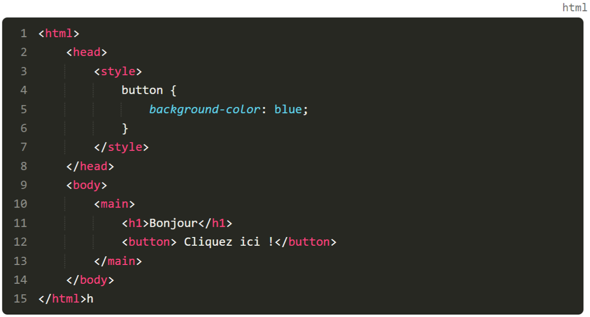
Cela peut sembler étrange puisque la plupart des modèles traditionnels intègrent un fichier
.css
au lieu d'incruster le bloc de style, mais c'est en fait très efficace.
Cela garantit en effet que les utilisateurs ne reçoivent que la CSS dont ils ont besoin, au lieu de télécharger du code superflu, qui ne sera jamais utilisé.
Utilisez des styles délimités
La technique des styles délimités (scoped styles) est devenue populaire récemment.
Elle permet de fournir un attribut
scoped
au bloc de style, afin que le CSS ne s'applique qu'aux éléments du composant courant.
Pour ce faire, un attribut
data
personnalisé est ajouté à la classe CSS et à l'élément HTML, afin que les styles restent « scopés », donc délimités.
Grâce à cela, les effets de cascade sont minimisés en limitant leur périmètre d'action.
Cependant, cela n'empêchera pas les styles plus spécifiques de prendre le dessus si quelqu'un écrit des sélecteurs génériques plus spécifiques.
Il est donc très important d'utiliser de bonnes techniques d'architecture CSS !
Avant le build
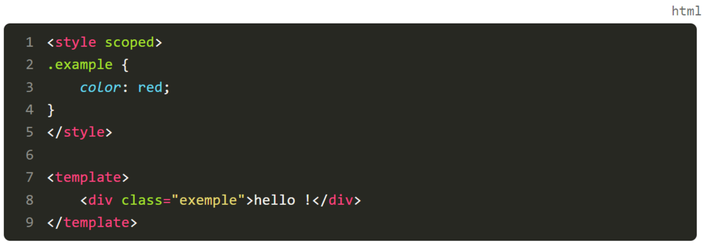
Après le build
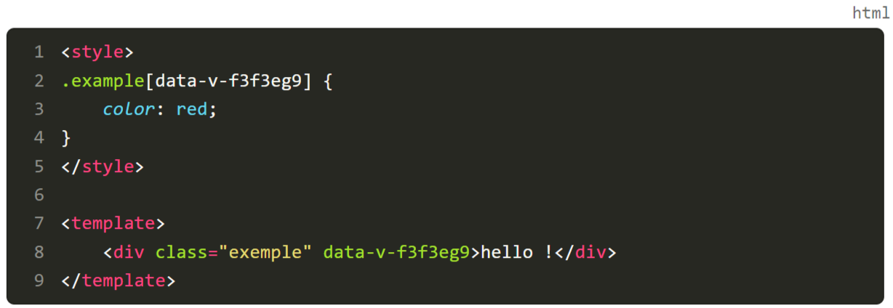
Ajoutez des modules CSS
Bien que la technique des scoped styles puisse être efficace pour certains cas,
l'un de ses principaux inconvénients vient du fait qu'elle peut être affectée par des styles présentant une plus grande spécificité.
Ce n'est généralement pas un problème important pour la plupart des styles, mais cela peut devenir problématique lorsque des CSS tierces s'ajoutent et que des éléments comme
.button
sont courants.
Les modules CSS sont appréciés pour les possibilités de modularité et de composition de CSS offertes, comme illustré ci-dessous :
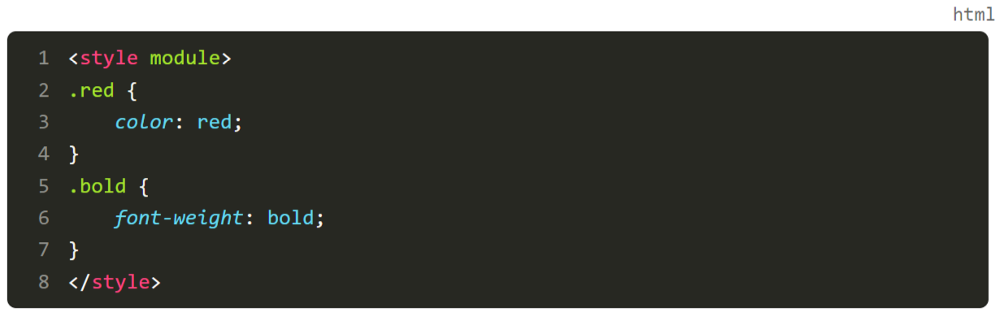
Comme pour les styles délimités, vous n'avez qu'à ajouter un attribut
module
à
< style>
et il ajoutera vos styles avec un hash aléatoire par défaut.
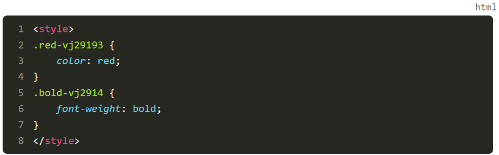
Cependant, l'utilisation des modules CSS nécessite d'ajouter la classe CSS avec le style
$
dans une classe
v-bind:class
.
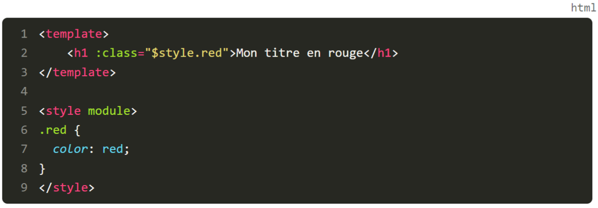
Même s'il faut s'habituer à la syntaxe, les avantages des modules CSS l'emportent souvent sur le temps nécessaire à l'intégration de la nouvelle façon d'écrire les classes.
Cependant, si vous ou votre équipe n'avez pas besoin de modules CSS, vous n'avez pas à vous soucier du tout de cette nouvelle syntaxe.
Découvrez des stratégies pour gérer les styles de votre application
Maintenez vos styles couplés à votre composant
En gardant vos styles au bas niveau, vous vous assurez que les futurs développeurs connaîtront le contexte dans lequel le style a été créé.
Cela vous évite de passer un temps considérable à essayer de créer un design system ultra perfectionné.
L'avantage, c'est que cela permet d'améliorer la maintenabilité à long terme de votre application, tout en tirant parti du découpage du code fourni par Vue.
Par exemple, en langage CSS traditionnel, vous pourriez écrire les styles de votre bouton comme suit :
style.css
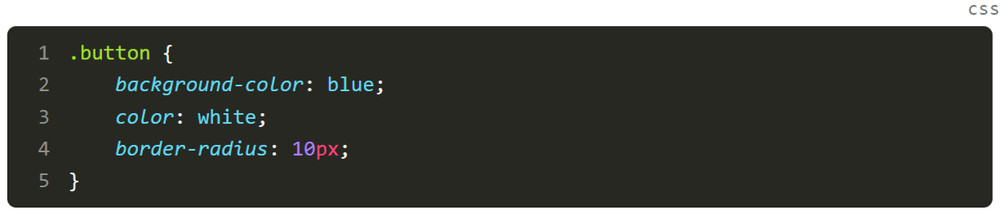
Cependant, même s'il ne s'agit que d'une seule classe CSS, imaginez ce qui se passerait s'il y avait encore plus de styles.
Cela signifie que les utilisateurs téléchargeraient toutes ces données, qu'ils utilisent les styles ou non.
De plus, cela ne simplifie pas les choses lorsque l'on travaille avec du code existant, car il est difficile de refactoriser sans connaître les effets de bord possibles.
En revanche, si nous gérions nos styles avec Vue...
src/components/CustomButton.vue
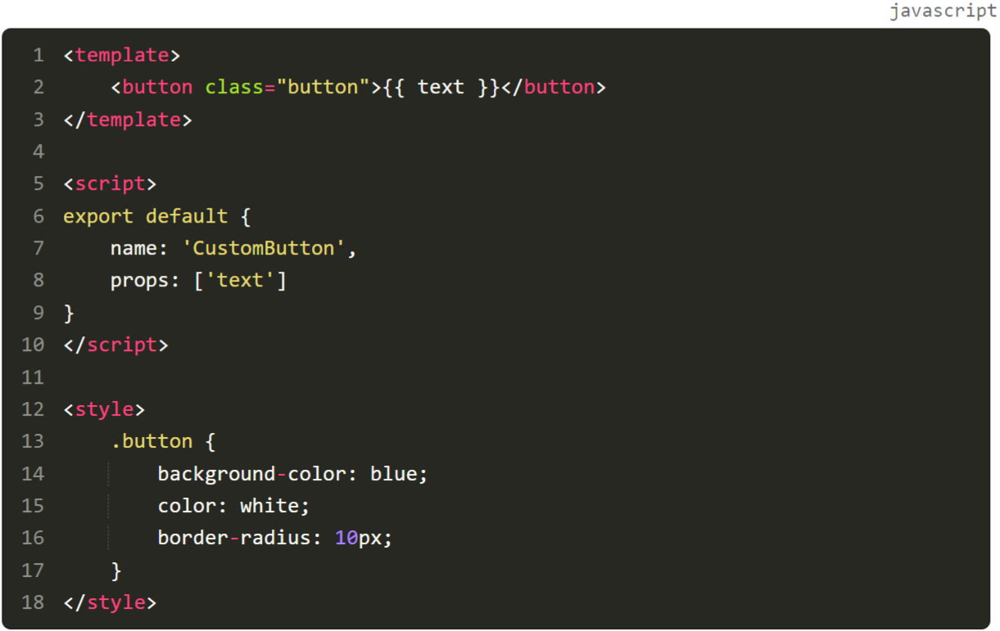
N'importe quel développeur peut comprendre avec facilité la façon dont le code est lié, les effets de bord ne constituent plus vraiment un sujet de préoccupation.
Ne généralisez les styles que lorsque vous avez un cas de réutilisation
Il peut être tentant de tester et de s'en tenir aux méthodes traditionnelles de CSS, en mettant tous les styles dans un fichier CSS partagé.
Mais ce n'est pas forcément une bonne idée.
En effet, ce fichier ne peut pas être parsé de manière intelligente lorsque l'utilisateur visite une page.
Donc, à moins que vous ne voyiez un grand nombre de réutilisations de styles à travers différents composants, ma recommandation générale est de ne pas les extraire dans un fichier CSS générique, mais de s'en tenir au style composant par composant.
Entrainez-vous
Vous trouverez le code source des exercices dans le repo GitHub du cours, dans le dossier
cafe-avec-vue
.
Pour commencer, consultez la branche
P3C1-Begin
.
Instructions
Migrez tous les styles des sites statiques
styles.css
dans les fichiers des composants respectifs.
Utilisez votre préprocesseur préféré si vous le souhaitez !
En résumé
Dans ce chapitre, vous avez découvert :
l'utilisation de préprocesseurs dans un composant monofichier ;
les stratégies de gestion des styles avec les scoped styles ;
les stratégies de gestion des styles avec les CSS Modules ;
les stratégies de gestion des styles au fur et à mesure que vous créez des composants.
Dans les chapitres précédents, vous avez appris à utiliser les props pour passer des données vers un composant.
Cependant, cela n'était qu'une utilisation basique des props.
Que se passerait-il si nous voulions être plus explicites sur le type de données qui doivent être passées ?
Et si nous voulions nous assurer que la prop est passée en continu pour que notre composant bénéficie des propriétés dont il a besoin ?
Définissez des props en tant qu'objets
Définir les props comme un simple tableau de chaînes de caractères a l'avantage d'être facile à lire et à comprendre.
Mais ça manque justement de complexité.
Or, nous avons besoin de complexité pour nous assurer que nos props fonctionnent comme nous le souhaitons, peu importe qui utilise la prop.
Par exemple, dans le code ci-dessous, vous remarquerez que le composant prend trois props différentes :
list
;
title
;
count
.
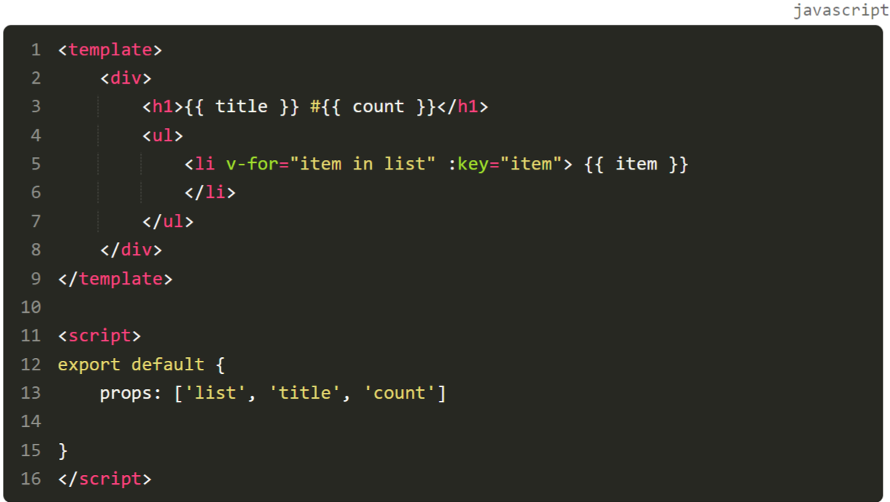
Cependant, ces props ont des exigences spécifiques, ce qui pose problème.
Par exemple,
title
devrait être une
string
mais
list
devrait posséder un comportement itératif, comme un
array
ou un
object
.
Plutôt que d'espérer que ce soient bien les bonnes données qui sont passées, en croisant les doigts, ce serait quand même bien mieux de pouvoir empêcher le mauvais type de données de passer.
C'est possible en définissant les props à l'aide d'un objet au lieu d'un tableau de chaînes de caractères.
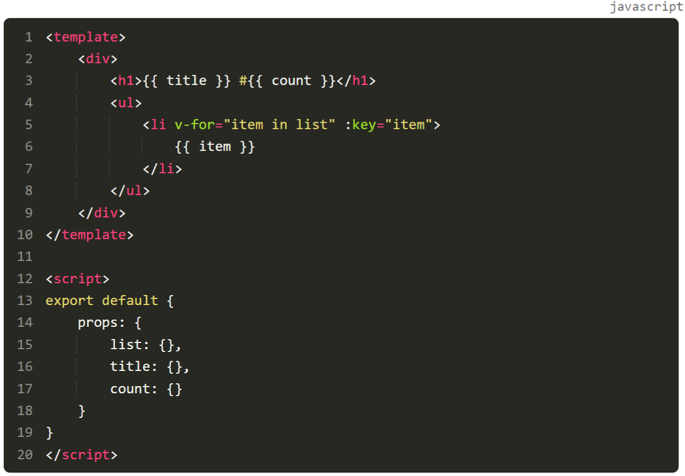
Ici, la valeur de
props
est un objet.
Les propriétés de cet objet correspondent à chacune des
props
que vous souhaitez utiliser.
Pour cela, à chaque fois, une clé correspondant au nom de la
prop
(par exemple,
list
) à laquelle est associée un objet servira à définir la configuration de l'objet.
Comme je vous l'ai dit, nous voulons éviter de recevoir le mauvais type de données dans chaque
prop
.
Il faut donc commencer par configurer le type de
prop
attendu avec la clé
type
qui prend comme valeur un type de données JavaScript.
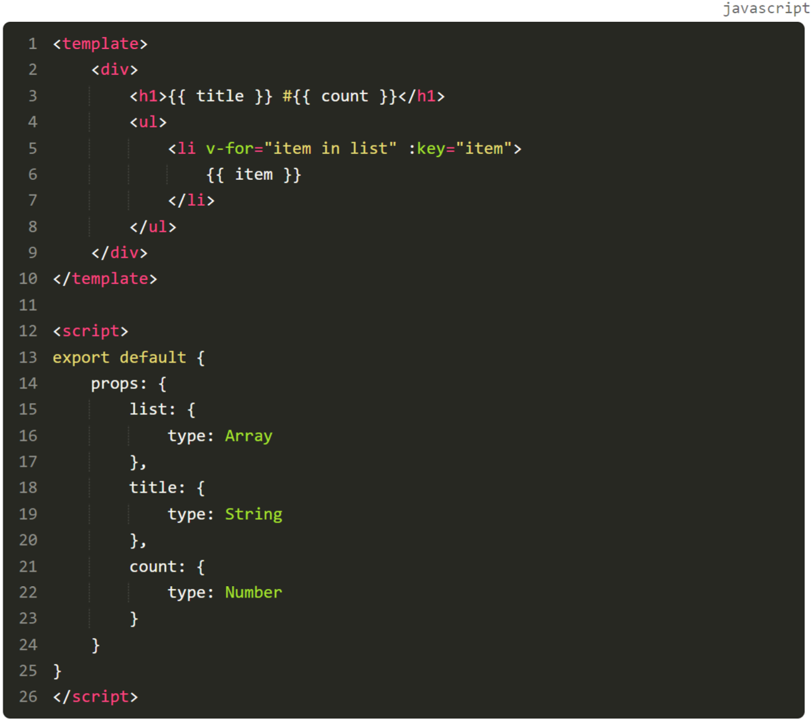
Pour avoir une liste complète des différents types de
Par ailleurs, si notre composant a besoin de certaines
props
pour fonctionner ou avoir l'apparence souhaitée, ce serait génial de pouvoir le configurer.
Vous vous en doutez, si je vous dis ça, c'est que Vue rend cela possible.
Il suffit d'ajouter la clé
required
qui prend un booléen en valeur dans notre objet de configuration.
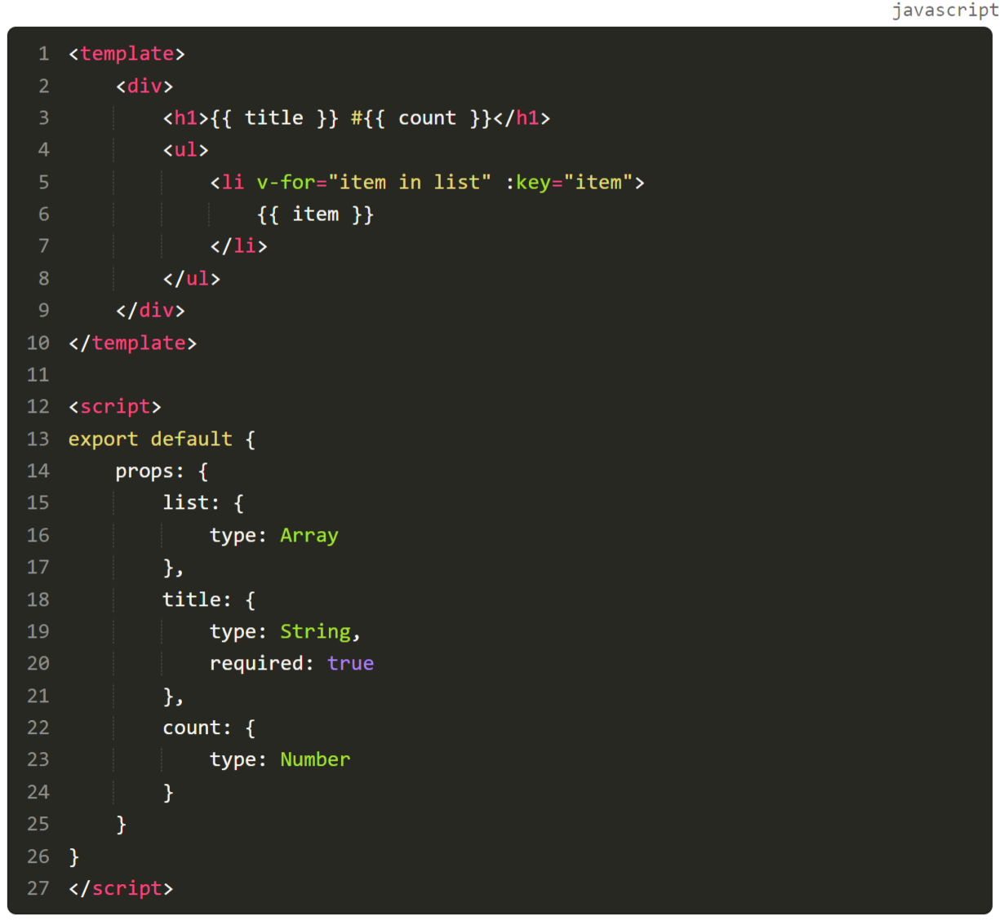
Par défaut, la valeur de
required
est
false
.
Cet objet nous permet même de définir une valeur par défaut sur les propriétés afin de fournir un contenu par défaut, dans le cas où la
prop
n'est jamais définie.
Pour cela, il vous suffit de préciser la clé
default
et de lui associer la valeur souhaitée selon vos besoins.
Dans notre exemple, cela pourrait ressembler à ce qui suit :
Vous avez peut-être remarqué que
Array
a une valeur par défaut qui utilise une fonction anonyme pour retourner un tableau vide.
Nous ne l'aborderons pas dans ce cours, mais sachez que les valeurs par défaut des
Arrays
et des
Objects
doivent être retournées par une fonction pour que cela fonctionne correctement.
Entrainez-vous
Vous trouverez le code source des exercices dans le repo GitHub du cours, dans le dossier
cafe-avec-vue
.
Pour commencer, consultez la branche
P3C2-Begin
.
Instructions
Utilisez la syntaxe en objet pour définir les propriétés associées à
props
dans
MenuItem.vue
.
En résumé
Dans ce chapitre, vous avez acquis les connaissances pour :
définir des props à l'aide d'un objet ;
définir des types de prop pour minimiser les bugs potentiels ;
3.3 Émettez des événements vers des composants parents
Révisez les événements
En développement web, les événements sont des actions ou des occurrences qui se produisent pendant l'utilisation d'un site web.
Voici des exemples courants d'événements :
lorsqu'un utilisateur clique sur un élément ;
lorsqu'un utilisateur appuie sur une touche du clavier ;
lorsqu'un formulaire est soumis ;
lorsque la fenêtre d'un navigateur est redimensionnée.
Lorsque ces actions se produisent, des événements sont émis afin que nous puissions y répondre en utilisant des techniques comme les gestionnaires d'événements.
Un objet événement (event-object) est alors automatiquement passé aux événements.
Il contiendra des fonctionnalités supplémentaires ou des informations sur l'événement.
Par exemple, lorsqu'un utilisateur appuie sur une touche du clavier, l'objet événement peut nous indiquer quelle touche a été actionnée.
Créez un événement personnalisé
Dans le monde du frontend, la gestion des événements est répandue.
Comme nous l'avons vu précédemment avec la directive
v-on
, nous pouvons facilement écouter des événements courants et déclencher des fonctions à volonté.
Cependant, ce serait bien pratique de pouvoir définir nos propres événements personnalisés faisant l'objet d'une émission.
Heureusement, c'est très facile à réaliser avec la fonctionnalité intégrée
$emit
de Vue.
Utilisez
$emit
La fonction
$emit
prend deux paramètres :
le nom de l'événement (qui doit être défini en kebab-case) ;
un payload optionnel que vous pouvez utiliser pour passer des données à l'écouteur de l'événement.
src/ChildComponent.vue
Le payload est généralement défini comme un objet.
Cela permet de passer autant de propriétés que souhaité à travers un seul événement
Écoutez et répondez à un événement émis
Une fois qu'un événement est émis, le composant parent qui utilise le composant enfant est capable d'écouter l'événement via la directive
v-on
.
Pour cela, vous devez :
Ajouter un écouteur d'événement (listener)
v-on
avec le nom de l'événement personnalisé sur le composant émettant l'événement.
Lui assigner une méthode recevant le payload comme premier argument s'il existe.
src/ParentComponent.vue
Attention cependant :
cette technique ne fonctionne que lorsqu'on communique directement depuis un composant enfant vers un composant parent.
En d'autres termes, ne vous attendez pas à ce que votre événement soit émis dans l'ensemble de l'application.
Entrainez-vous
Vous trouverez le code source des exercices dans le repo GitHub du cours, dans le dossier
cafe-avec-vue
.
Pour commencer, consultez la branche
P3C3-Begin
.
Instructions
Supprimez la prop
addToShoppingCart
du
MenuItem
Créez une nouvelle méthode appelée
updateShoppingCart
dans
MenuItem
qui émet un événement appelé
add-items-to-cart
à
Home.vue
pour mettre à jour le panier.
En résumé
Dans ce chapitre, vous avez appris à :
définir des événements personnalisés dans les composants ;
émettre des événements personnalisés à partir de composants enfants ;
écouter des événements personnalisés à partir de composants enfants ;
utiliser le payload des événements personnalisés pour effectuer des actions supplémentaires.
3.4 Créez des composants flexibles en utilisant les slots
Même si les props sont très puissantes, elles ajoutent un niveau de complexité dans l'interaction avec un composant, puisqu'elles demandent un certain niveau de connaissance afin d'utiliser le composant de manière adéquate.
De plus, on peut facilement se retrouver au milieu d'un « bazar de props » lorsqu'un composant a besoin de plusieurs props pour fonctionner correctement.
Dans le cas où votre composant nécessiterait une solution plus flexible, Vue peut vous aider avec la technique des
slots
.
Découvrez les slots
L'élément
< slot>< /slot>
sert d'emplacement pour du contenu que le développeur peut définir dynamiquement sans props prédéterminées.
Prenons un exemple.
À l'aide du composant
custom-banner
, nous voulons que les utilisateurs puissent définir différentes bannières personnalisées.
L'idée ici est justement d'éviter notre bazar de props.
Par exemple, imaginons que nous voulions que notre composant
CustomBanners
rende le résultat suivant :
Si cela avait été réalisé uniquement avec des props, le résultat pourrait ressembler à ceci :
Plus important encore, le bloc Template du composant
CustomBanner
ressemblerait à ceci :
src/components/CustomBanner.vue
Même dans cet exemple simple, le bloc Template semble déjà assez difficile à lire.
Alors que si on avait utilisé des slots...
src/components/CustomBanner.vue
Et voilà !
Comme vous pouvez le voir, le slot devient un espace ouvert où le développeur peut passer n'importe quel contenu personnalisé,
sans avoir besoin d'utiliser un grand nombre de conditions pour gérer différents scénarios de props.
Définissez le contenu par défaut d'un slot
De la même façon qu'il est possible de définir une valeur par défaut pour les props,
vous pouvez également définir le contenu par défaut d'un slot.
C'est particulièrement utile lorsque vous souhaitez afficher un contenu standard, à moins que le développeur ne définisse un contenu personnalisé.
Pour donner un contenu par défaut à notre
CustomBanner
,
tout ce que nous avons à faire est de placer le contenu par défaut à l'intérieur des balises
slot
dans le bloc
Template
.
Découvrez comment utiliser plusieurs slots
Vous vous demandez peut-être aussi : « Et si je veux utiliser plusieurs slots dans un composant ? »
Et ce serait une excellente question !
Prenons l'exemple d'un simple composant
Card
:
Dans ce composant, nous utilisons des props pour effectuer la configuration,
mais nous savons que ce sera un cauchemar à gérer s'il s'agrandit.
Ici, trois slots différents pourraient être définis par un développeur.
Pour résoudre ce problème, nous avons besoin de slots nommés.
Les slots nommés permettent d'attribuer des noms aux slots afin que les développeurs puissent s'y référer plus tard.
Ainsi, dans l'instance de notre composant
Card
, nous donnons simplement une prop
name
à chaque slot.
Lorsque nous voulons invoquer notre composant (à partir de la v2.6 de Vue.js et plus),
il suffit d'utiliser la directive
v-slot
sur un élément
template
comme ici :
Entrainez-vous
Vous trouverez le code source des exercices dans le repo GitHub du cours, dans le dossier
cafe-avec-vue
.
Pour commencer, consultez la branche
P3C4-Begin
.
Instructions
Refactorez le composant
BaseButton
en utilisant des slots plutôt que les props qui sont définies pour le moment.
En résumé
Dans ce chapitre, vous avez découvert :
les difficultés induite par le bazar de props ;
la définition de slots sur des composants ;
la définition de contenu par défaut dans les slots ;
l'utilisation de slots nommés pour gérer plusieurs slots.
Lorsque l'on travaille avec des applications monopages (SPA), le concept de state management (gestion d'état) est un sujet couramment abordé.
Et même si ce sujet peut souvent mener à des discussions très complexes, le principal objectif recherché par tous est le suivant : s'assurer que l'application utilise les bonnes données à tout moment.
Sur cette base, nous pouvons définir le state (ou état, en français) comme un instantané du data store à un moment donné.
De multiples states sont utilisés à travers une application, ce qui explique la complexité inhérente à la gestion de ces éléments.
Après tout, chaque composant utilisé contient sa propre propriété
data
, ce qui signifie qu'il gère son propre state.
Une fois que l'on ajoute la complexité du passage de données entre composants, cela devient effectivement très compliqué.
Pour illustrer cela, combien y a-t-il d'instances de state représentées dans l'exemple suivant ?
src/components/GroceryList.vue
À première vue, il semblerait qu'il y ait deux instances d'état : le composant parent
< GroceryList>
et le composant enfant
< ListItem>
.
Pourtant, il s'avère que nous sommes en réalité en présence de 4 instances de state au total :
GroceryList.
ListItem item="pommes".
ListItem item="bananes".
ListItem item="cerises".
Pour comprendre cela, imaginez que le composant
< ListItem>
ait été défini comme suit :
Comme vous pouvez l'imaginer, chaque article de
< GroceryList>
doit pouvoir gérer le fait qu'il a été acheté ou non.
Si les composants enfants partageaient un state unique, alors le fait de cocher un seul article mettrait automatiquement à jour les autres composants
Récupérez vos datas à la source unique de vérité
Dans les discussions autour de la gestion du state, et parmi les termes couramment cités, apparaît l'idée d'une « source unique de vérité » (qui est aussi parfois abrégée en « SSoT » pour Single Source of Truth).
Le concept fondamental derrière une source unique de vérité est d'éviter la duplication inutile de données dans l'application.
Bien que cela puisse paraître anodin à première vue, le fait de stocker plusieurs copies des mêmes données dans une application est souvent la principale cause de bugs dans un système,
car cela permet l'existence de différents jeux des « mêmes » données en même temps.
Au lieu de n'avoir à mettre à jour qu'un seul jeu de données, l'application devra gérer plusieurs jeux de données, ce qui est problématique, car :
du point de vue du code, cela s'avère bien plus difficile à gérer,
car il existe une dépendance qu'il est facile d'oublier à mesure que le système se complexifie ;
des bugs apparaissent en plus grand nombre à la suite de cette fragmentation.
C'est pour cette raison que le concept de source unique de vérité est essentiel au succès de tout système de gestion du state.
Entrainez-vous
Vous trouverez le code source des exercices dans le repo GitHub du cours, dans le dossier
cafe-avec-vue
.
Pour commencer, consultez la branche
P4C1-Begin
.
Instructions
Évaluez le state actuel de l'application et déterminez où se trouvent les différentes propriétés des données.
Créez un plan ou un document visuel représentant la structure du state de l'application.
En résumé
Dans notre vision du système de gestionnaire de state idéal, ce dernier devrait être capable de :
créer un espace de stockage de données unique qui servira de source unique de vérité pour toutes les données partagées ;
permettre à n'importe quel composant de récupérer des données directement ;
permettre à n'importe quel composant de modifier le data store unique directement.
Vuex est un gestionnaire d'état et une bibliothèque pour les applications Vue.js.
En d'autres termes, le but unique de Vuex est de nous aider à créer un store centralisé qui nous permettra d'avoir cette "source unique de vérité" pour récupérer nos datas.
Installez Vuex
Grâce à Vue CLI, il suffit d'exécuter la commande suivante dans notre terminal pour ajouter Vuex à notre projet :
vue add vuex
Une fois Vuex ajouté à votre application par Vue CLI, vous devriez voir un résultat similaire dans votre terminal : Ce que vous devriez voir dans votre terminal
Cela signifie que Vuex est bien installé dans votre application.
Maintenant, voyons voir quels changements ont été apportés à notre application.
src/main.js
En regardant le fichier
main.js
de plus près, vous remarquerez que le plugin a introduit le
store
en tant que nouvelle configuration sur notre instance de Vue.
De la même manière que nous configurerions une propriété
data
pour mettre en place un nouveau data store,
vous pouvez considérer cette propriété
store
comme le data store global que nous allons configurer avec Vuex.
Jetons un œil au fichier dans lequel toute la magie Vuex a lieu :
src/store.js
Rencontrez
store/index.js
En parcourant
store/index.js
, vous remarquerez une nouvelle ligne de code que nous n'avions pas encore rencontrée :
Vue.use(Vuex)
Cette syntaxe est utilisée pour le système de plugins Vue.
Cette méthode permet d'ajouter une fonctionnalité globale à notre instance de Vue.
Et comme notre but est d'ajouter un data store global dans notre application, le système de plugin est parfait pour ajouter Vuex à notre application.
Ensuite, comme pour la mise en place d'une nouvelle instance de Vue avec
new Vue()
,
Vuex est installé de la même manière avec
new Vuex.Store()
.
Et vous pouvez également lui passer des options de configuration, exactement comme pour une nouvelle instance de Vue.
Configurez Vuex
Comme nous le voyons dans
store/index.js
, l'initialisation d'un nouveau store Vuex ne nécessite qu'une seule configuration.
Cela se fait par un objet contenant trois clés :
state
mutations
actions
Entrainez-vous
Vous trouverez le code source des exercices dans le repo GitHub du cours, dans le dossier
cafe-avec-vue
.
Pour commencer, consultez la branche
P4C2-Begin
.
Instructions
Ajoutez Vuex à l'application.
Vérifiez que la boilerplate pour le store est bien présente dans un fichier comme
store/index.js
.
En résumé
Dans ce chapitre, nous avons appris :
ce qu'est Vuex : une bibliothèque de gestion d'état permettant de créer un store centralisé qui deviendra la seule source de vérité de notre app ;
Maintenant que nous avons installé Vuex dans notre application, il est temps pour nous de comprendre son fonctionnement.
Et comme Vuex nous sert de store global, nous devrions commencer par apprendre dès maintenant comment stocker et récupérer les données qui s'y trouvent.
Stockez des données dans Vuex
Dans Vuex, notre data store est défini en tant que
state
dans l'objet de configuration
store/index.js
.
Il s'agit d'un nouveau terme à apprendre, mais vous pouvez comparer cela à la propriété
data
que nous utilisons depuis le début. Une comparaison entre le state du store Vuex et le data store d'un objet de config standard Vue
Lorsqu'il s'agit de stocker des données dans Vuex,
c'est aussi simple que d'ajouter des paires clé-valeur,
comme vous le feriez dans tout autre objet JavaScript normal. Une comparaison entre le state du store Vuex et le data store d'un objet de config standard Vue
Du coup, cela veut dire que je devrais tout mettre dans le state Vuex plutôt que dans le data store des composants ?
Il peut paraître tentant de tout mettre dans le store global ;
mais ce n'est pas ce qu'il faut faire, car une partie de ce qui rend l'architecture par composants aussi puissante est sa capacité à découper un certain nombre de sujets.
L'idée est de remonter les données à un niveau global uniquement lorsque vous constaterez qu'il est nécessaire d'accéder aux données à partir de plusieurs composants.
Récupérez des données dans Vuex
Maintenant que nous savons comment définir les données dans Vuex,
l'étape suivante consiste naturellement à déterminer comment accéder à nos données depuis nos composants.
Il existe deux façons de faire.
Utilisez $store
Au fur et à mesure que vous allez approfondir des techniques plus avancées de Vue et que vous développerez vos connaissances,
vous découvrirez des propriétés qui sont précédées du symbole dollar.
En voici quelques exemples :
this.$options
this.$parent
this.$children
etc...
Il s'agit de propriétés spécifiques à l'instance de Vue sur laquelle vous travaillez ;
elles sont précédées du signe dollar afin de garantir que ces méthodes sont bien utilisées comme prévu.
Comme notre
store
Vuex est injecté à un niveau global à travers tous nos composants,
cela signifie que nous avons accès à une propriété
$store
qui nous permettra d'accéder directement à Vuex dans sa totalité.
Si on reprend notre exemple situé plus haut, nous pourrions accéder à notre state via
$store
par ce qui suit :
Cependant, notre template commence à être un peu encombré.
Il serait pratique d'avoir un moyen plus simple de faire référence au store, n'est-ce pas ?
Eh bien, heureusement pour nous, il y a :


 Du coup, cela veut dire que je devrais tout mettre dans le state Vuex plutôt que dans le data store des composants ?
Du coup, cela veut dire que je devrais tout mettre dans le state Vuex plutôt que dans le data store des composants ?